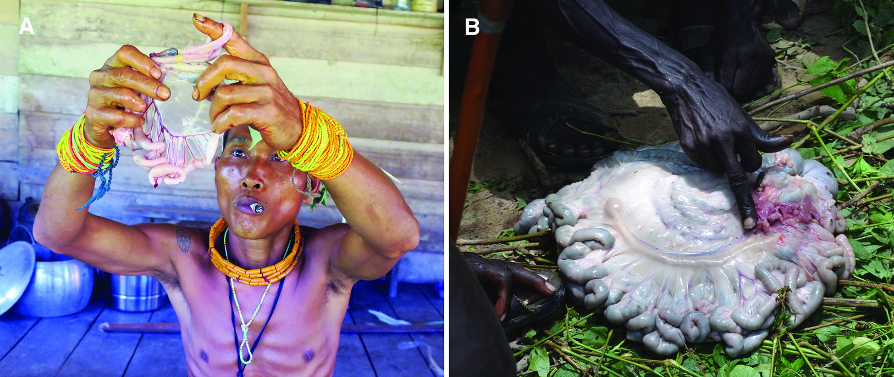
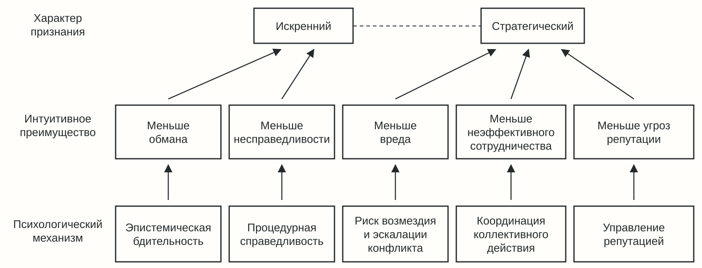

Перевод с английского · полный текст
Зачем нужно гадание?
Эволюционно сформировавшаяся психология и стратегическое взаимодействие в производстве истины
Why Divination? Evolved Psychology and Strategic Interaction in the Production of Truth
Current Anthropology, том 61, № 1, февраль 2020
Аннотация
Гадание встречается в большинстве человеческих обществ, однако систематических исследований, объясняющих (1) почему оно убеждает людей и (2) почему во многих малых обществах оно необходимо для важных коллективных решений, немного. Общие особенности человеческого общения и сотрудничества могут помочь ответить на оба вопроса. Одна из чрезвычайно распространённых черт гадания — «демонстративное отстранение» (ostensive detachment): демонстрация того, что гадатели не являются авторами произносимых ими высказываний. Вследствие этого люди спонтанно воспринимают гадание как менее подверженное влиянию чьих-либо намерений или интересов, чем другие высказывания. Этого достаточно, чтобы дать гаданию эпистемическое преимущество перед другими источниками информации, что отвечает на первый вопрос. Преимущество особенно важно в ситуациях, когда диагноз создаёт неодинаковые издержки и выгоды, например при установлении того, кто виновен в чьём-либо несчастье в небольшой общине. Гадательные высказывания предлагают версию ситуации, с которой большинство участников заинтересовано согласиться: она служит фокальной точкой (focal point) для эффективной координации при минимальных издержках почти для всех участников. Это позволяет ответить на второй вопрос.
Введение
Встревоженные влюблённые обрывают лепестки цветка, чтобы узнать, взаимны ли их чувства. Люди обращаются к картам таро или чайным листьям, чтобы разобраться в своей профессиональной ситуации. Подходящее место для дома, лучший день для свадьбы и верное время для начала войны во многих местах определяют гаданием. Приметы, оракулы и гадательные практики направляли решения и давали предположительно надёжную информацию во всех человеческих группах на протяжении всей доступной нам истории. Идея процедуры — например, бросания костей, раскладывания карт, разбрасывания камешков по земле или скармливания яда курице, — которая определяет содержание высказывания и тем самым делает его достоверным, представляет собой необычайно успешное культурное изобретение (Curry 2013; Douglas and Evans-Pritchard 1970; Johnston and Struck 2005; Struck 2016). Почему это так?
Исторические и антропологические исследования дают бесчисленные описания гадательных техник и сопровождающих их социальных взаимодействий, ставя два важнейших вопроса.
- Зачем вообще прибегать к гаданию? Почему клиенты — или гадатели — считают, что эти процедуры дают некоторую гарантию истины?
- Почему в одних обществах гадание так важно, а в других нет? Во многих частях мира, особенно в наиболее знакомых нам крупных массовых обществах, гадание широко распространено и весьма разнообразно, но занимает периферийное положение в общественной жизни. Напротив, во многих малых обществах оно играет центральную роль в самых разных жизненно важных решениях: при выборе политических должностных лиц, решении начать войну или охотиться в определённых местах, а также при определении надлежащего способа справиться с несчастьем. Чем объяснить этот контраст?
Процедуры определяют и удостоверяют высказывания
Историки и антропологи обычно различают несколько широких типов гадательных процедур: (а) так называемое механическое гадание, при котором манипуляции с предметами — например, игральными костями, камешками, костями животных или картами — по заранее существующим правилам определяют содержание гадательных высказываний; (б) «вдохновенное» гадание, при котором человек предположительно одержим другим, нередко сверхчеловеческим, агентом или испытывает иное его воздействие; (в) наблюдение знамений — природных явлений, возникающих без человеческого вмешательства, но часто требующих истолкования специалистом. Однако антропологи сходятся в том, что это различные типы, а не взаимоисключающие категории (Devisch 1985:52; Tedlock 2006:65).
Общая черта всех этих практик — ожидание участников, что высказывания, полученные с помощью определённой техники, с большей вероятностью содержат истинное описание некоторого положения дел, чем другие доступные источники информации. Почему люди считают гадательные процедуры гарантией истины?
Как ни удивительно, значительная часть антропологических размышлений о гадании состояла в попытках либо обойти этот вопрос, либо отрицать его значимость. Как отмечает Мюре, гадание описывают как «средство эмоционального успокоения, инструмент восстановления и поддержания социальной структуры, способ принимать решения, вырабатывать согласие и устанавливать политическую легитимность или средство поддержания когнитивного порядка» — словом, как всё что угодно, кроме попытки получить точные сведения о чём-то интересующем людей (Myhre 2006:313).
Но факт остаётся фактом: диагноз, полученный посредством гадания, люди хотя бы предварительно считают более вероятно верным, чем другие высказывания о рассматриваемой ситуации; именно ради этого к гаданию вообще и прибегают (Holbraad 2008, 2012; Kiernan 1995; Myhre 2006). Разумеется, использование гадания в каждой конкретной человеческой группе сопровождается всевозможными специфическими риторическими, терапевтическими, политическими и поэтическими процессами. Но от места к месту они различаются. Чтобы объяснить необычайную повторяемость гадания в самых разных культурах, разумнее сосредоточиться на том, что действительно повторяется во множестве его проявлений: (а) согласованная процедура определяет содержание конкретного высказывания о ситуации; (б) это высказывание считается более вероятно точным, чем сопоставимые источники информации, именно вследствие пункта «а».
Эволюционный контекст: истина, обман и бдительность
Доверие к гадательным техникам, наблюдаемое в самых разных условиях, можно лучше понять в более общем контексте механизмов, с помощью которых человеческий ум приобретает информацию и оценивает её эпистемическое качество.
Людям больше, чем любым другим организмам, необходимо получать из окружающей среды информацию — на порядки больше, чем даже близким филогенетическим родственникам, человекообразным обезьянам (Tooby and DeVore 1987). Большинство типичных для нашего вида занятий требует доступа к большим объёмам знаний и умения делать на их основе выводы. Основная часть этих сведений приобретается опосредованно, в форме социально передаваемой информации.
Однако между людьми неизбежно возникают конфликты интересов, поэтому одному агенту может быть выгодно передать неточную информацию, способную побудить других действовать в его интересах. Иными словами, обман возможен; более того, он распространён и трудно распознаётся. Люди должны уметь оценивать качество информации, поступающей от других: её потенциальное положительное влияние на эволюционную приспособленность (fitness) зависит от её точности. Поэтому следует ожидать, что естественный отбор сделал людей чувствительными к различиям в качестве информации.
Эпистемическая бдительность
Психологи и лингвисты действительно описали комплекс когнитивных способностей, направленных на максимальное извлечение пользы из полезной информации и защиту ума от обмана. Существует множество свидетельств работы таких механизмов «эпистемической бдительности» (epistemic vigilance; Clément 2010; Sperber et al. 2010), позволяющих оценивать качество обоснованных доводов и распознавать высказывания, вводящие в заблуждение намеренно или по ошибке. Выводы этих механизмов касаются не только содержания высказываний, но и качества источников: внимание направляется на признаки ненадёжности или, напротив, надёжности информаторов. Например, очевидно, что люди замечают несогласованность и снижают доверие к сведениям из противоречивых источников (Mercier 2012). Но люди также учитывают намерения: по словам Спербера и соавторов, «надёжный информатор должен удовлетворять двум условиям: быть компетентным и быть доброжелательным» (Sperber et al. 2010:369). Ключевой момент эпистемической бдительности состоит в том, что люди обращают внимание на качество аргументов и источников прежде всего ради оценки того, какую пользу им может принести получаемая информация.
Бдительность появляется очень рано в когнитивном развитии: всё больше данных показывает, что дети используют сложные неявные принципы оценки высказываний и источников (Clément 2010). С помощью таких принципов они способны заключать и действительно заключают, что источник надёжен — например, потому что говорящий непосредственно знаком с предметом, — а довод правдоподобен, например потому что согласуется с прежними убеждениями. Уже дети четырёх–шести лет замечают признаки некомпетентности и делают вывод о ненадёжности источника (Fusaro and Harris 2008; Harris and Lane 2014), причём аргументы, основанные на рассуждении, убеждают их больше, чем ссылки на авторитет (Castelain et al. 2016). Дети учитывают и то, что можно заключить о намерениях людей: они предпочитают получать сведения из источников не только компетентных, но и доброжелательных, подозрительно относясь к сообщениям тех, кто использовал других в своих интересах (Couillard and Woodward 1999; Liu, Vanderbilt, and Heyman 2013; Mascaro and Sperber 2009). Например, они интуитивно понимают, что самоописание может быть стратегическим и потому обманчивым (Gee and Heyman 2007).
Эти результаты иллюстрируют две особенности эпистемического познания, чрезвычайно важные для понимания действия гадания.
- Человеческий ум автоматически учитывает возможность того, что в общении затронуты чьи-то интересы. Поиск возможных намерений за высказыванием — спонтанная реакция на сообщения других.
- Ум также спонтанно вкладывает больше ресурсов в выяснение этих возможных намерений, когда последствия принятия высказывания на веру более значительны. Даже маленькие дети интуитивно понимают: если тема важна и затрагивает интересы говорящего, например когда человек описывает самого себя, содержание высказываний определяется его намерениями — в данном случае стремлением повысить престиж (Gee and Heyman 2007; Liu, Vanderbilt, and Heyman 2013).
Эпистемические интуиции и их рефлексивное истолкование
Оценка высказываний, особенно оценка их большей или меньшей надёжности, в значительной степени опирается на неявные принципы. Иными словами, соответствующие вычисления не осуществляются намеренно и по большей части протекают вне сознания. Мы осознаём их результаты — интуиции, например ощущение, что конкретное высказывание ненадёжно. Вместе с тем мы можем намеренно и явно рассуждать об источниках: «Поскольку вчера она сказала p, а сегодня не-p, ей нельзя доверять» или «Ему было бы выгодно, если бы я согласился с ним, что p; поэтому я не убеждён». Обычно мы прибегаем к таким рефлексивным размышлениям, чтобы объяснить, оправдать или иным образом прокомментировать собственные интуиции.
Таким образом, человек может иметь определённые эпистемические интуиции — например, что конкретное утверждение, вероятно, ложно или что один источник надёжнее другого, — не обязательно располагая явным, осознанным объяснением причин этой интуиции. Он может также формировать рефлексивные представления о своих интуициях: в данном случае — объяснения того, почему ему кажется подозрительным определённое высказывание или надёжным определённый источник. Эти явные рефлексивные представления — предположительные интерпретации, а нередко и рационализации интуиций. Нельзя заранее считать, что они точно описывают причины интуиций или породившие их механизмы.
Это, естественно, относится и к когнитивным процессам, делающим гадание убедительным. Следует ожидать, что часть этих процессов состоит из автоматических, по большей части неосознаваемых умозаключений, а сознательные, намеренные рассуждения — например, «гадание истинно, потому что…» — представляют собой последующие истолкования и обоснования уже возникших интуиций.
Риторика гадания: демонстративное отстранение как аргумент
Очевидно, центральный вопрос о гадании — почему его считают гарантией истины. В данном контексте это означает: какие когнитивные процессы создают интуицию повышенной надёжности, когда высказывания порождаются такими процедурами или испытывают их влияние?
Ложный старт: люди верят гаданию, потому что верят в гадание
Соблазнительно ответить очень просто: люди верят, что гадание порождает истинные высказывания. Согласно этому взгляду, от других усваивается общее убеждение, что принятые в данной местности гадательные процедуры действительно дают удостоверенные высказывания. Затем этот принцип дедуктивно применяется к конкретным случаям гадания, образуя фактически категорический силлогизм: гадательные высказывания истинны; это высказывание получено путём гадания; следовательно, оно истинно. Хотя такое объяснение кажется вполне правдоподобным, есть несколько оснований сомневаться в нём.
Во-первых, большинство этнографических описаний показывает, что люди далеко не всегда принимают все полученные при гадании высказывания: они нередко сомневаются в конкретных диагнозах или подозрительно относятся к квалификации отдельных гадателей. Ниже этот момент рассматривается подробнее. Поэтому, даже если некоторые считают гадание в целом надёжным, это убеждение не порождает тех выводов, которых следовало бы ожидать при правильности дедуктивной модели.
Во-вторых, в более общей перспективе культурно распространённые убеждения — например, что гадание производит истину, — не просто загружаются из одного ума в другой. Напротив, приведённые выше данные об эпистемической бдительности показывают, что формирование убеждений требует сложных выводов со стороны слушателя. Создать убеждения в чужом уме довольно трудно, особенно когда истинность высказываний имеет последствия для слушателя: десятилетия экспериментальных психологических исследований демонстрируют, что доверчивость людей в таких ситуациях весьма ограниченна (подробное обсуждение см. Mercier 2017). Поэтому маловероятно, что человек убеждён в способности гадания производить истину лишь потому, что другие члены его группы выражают такое убеждение.
Всё это указывает: насколько люди верят в общую надёжность своих гадательных процедур, настолько эту веру следует рассматривать не как исходную точку, а как результат эпистемической оценки. Иными словами, разные сведения могут способствовать интуиции человека, что высказывание, вероятно, истинно и что оно с большей вероятностью истинно именно потому, что получено путём гадания. К этим сведениям относятся (а) возможные высказывания других людей об общих свойствах гадания, (б) их высказывания о рассматриваемом конкретном случае и (в) иная информация о ситуации, описываемой посредством гадания.
Поскольку человек формирует доверие к гадательной технике на основе доступной информации, необходимо рассмотреть, какая именно информация используется и — что особенно важно — как гадательные процедуры её предоставляют.
Демонстративное отстранение
Эпистемическая оценка высказываний — оценка вероятности того, что они сообщают точные сведения, — требует учитывать свойства самих высказываний, например правдоподобие и непротиворечивость, и свойства источников, например компетентность и доброжелательность. Во многих ситуациях говорящие облегчают работу слушателя, предоставляя признаки надёжности собственных высказываний — то, что обычно называют аргументами (Mercier and Sperber 2017). Поскольку гадание включает высказывания, которые участники хотя бы предварительно считают правдивыми и которые часто касаются важных вопросов, следует ожидать, что они также сопровождаются признаками обоснованности.
Один такой признак особенно важен: он присутствует во множестве в остальном очень разных форм гадания. В рамках процедуры становится ясно, что произносящий гадательное высказывание — обычно гадатель — не должен считаться источником диагноза, лицом, ответственным за его содержание. Как пишет Лисдорф, «оператора обычно считают достаточно компетентным для выполнения техники, но не обладающим искомой информацией» (Lisdorf 2008:82). Это допущение передают многими способами. Например, говорят, что происходящее раскрывают карты, что высказались кости, что гадание заговорило и так далее. Замбийские гадатели и их клиенты согласны в том, что «во время гадания гадатели не говорят от собственного имени» (Silva 2014:1179); по выражению гадателей буньоро, «это не то, что я сам придумал» (Beattie 1964:48). Там, где диагноз получается из беспорядочного движения запертого под горшком паука, люди говорят, что «говорит» сам паук: очевидно, этим подразумевается, что высказывание исходит не от оператора, то есть гадателя (Zeitlyn 1993).
Во многих случаях так называемого механического гадания специалиста исключают из числа авторов высказывания посредством рандомизирующих техник — процедур, которые он в принципе не может контролировать. Например, семена или листья бросают в воду: одни тонут, другие остаются на поверхности. Гадатель бросает камешки на землю, но не может определить, куда упадёт каждый. Воздействие огня вызывает трещины на костях, но никто не способен предсказать их направление. Специалист бросает игральные кости, тасует карты таро или высыпает на стол мешочек мелких предметов. С точки зрения клиентов и других участников эти процессы неподконтрольны и потому создают то, что Макгроу в описании гадания майя называет «подавлением намерения» (suppression of intention; McGraw 2016:189). При вдохновенном гадании, например посредством одержимости духом или божеством, исключение самого гадателя или медиума как источника сообщения достигается другими признаками: использованием совершенно особого, «неестественного» голоса, иной лексики или другого языка.
Иными словами, важная особенность гадательных процедур состоит в том, что они задают совершенно особое и необычное описание роли самого гадателя в производстве высказываний — того, что Гофман называл коммуникативной позицией (footing) участника разговора, его ожидаемой ролью (Goffman 1981:124–129). Понятие «говорящий» часто слишком расплывчато для подробного описания разговорной динамики, поскольку включает и того, кто фактически произносит слова, и «автора» — агента, который предположительно определяет, что именно будет сказано (Goffman 1981:226). В гадательных процедурах произносящий высказывание сообщает, что его не следует ошибочно принимать за автора.
Этот аспект гадания можно назвать демонстративным отстранением: клиентам и другим участникам предъявляются наблюдаемые признаки, позволяющие заключить, что гадатель не участвует в создании высказывания. Как указывает Земплени, это «устранение гадателя» необходимо учитывать, если мы хотим понять вес гадательных высказываний (Zempléni 1994:241).
Что делает гадание особенным: прагматика отстранения
Чтобы понять действие демонстративного отстранения, необходимо рассматривать его на фоне прагматических выводов, делаемых в обычном разговоре.
Блокирование автоматических выводов
Для слушателя понимание высказывания состоит в выведении заключений на основе признаков, предоставленных говорящим. Когда говорящий произносит повествовательное высказывание p, это запускает у слушателя несколько выводов по умолчанию. Например:
(1) Говорящий произносит: «Ты нравишься Ориане».
По умолчанию это приводит к следующему:
(2) Слушатель представляет себе, что Говорящий хочет, чтобы Слушатель поверил, что нравится Ориане.
При отсутствии иной доступной информации это также запускает автоматический причинный вывод:
(3) Слушатель представляет себе, что намерения Говорящего, описанные в (2), стали причиной (1).
То есть говорящий сказал: «Ты нравишься Ориане», потому что хотел, чтобы слушатель в это поверил. Всё это довольно простые процессы вывода, ожидаемые в разговоре и в действительности необходимые для него (Grice 1991 [1967]; Sperber and Wilson 1996). Исходная точка по умолчанию для представления о смысле, вкладываемом говорящим, — предположение, что высказывание является следствием его коммуникативных намерений.1
Введение процедуры, которая демонстративно определяет содержание высказывания, блокирует некоторые из этих выводов. Рассмотрим условный пример: Говорящий на виду у всех подбрасывает монету, заранее объявив, что орёл означает «Слушатель нравится Ориане», а решка — «Слушатель ей не нравится». В этом случае:
(1) Говорящий произносит: «Ты нравишься Ориане».
Это допускает два возможных вывода:
(4) Слушатель представляет себе, что Говорящий, возможно, не намеревается заставить Слушателя поверить, что тот нравится Ориане.
(5) Слушатель представляет себе, что Говорящий, возможно, не имел предварительного убеждения, что Слушатель нравится Ориане.
А также связанный с ними причинный вывод:
(6) Слушатель заключает, что намерения Говорящего, какими бы они ни были, не стали причиной (1).
Иными словами, в той мере, в какой слушатель представляет себе намерения или убеждения говорящего относительно положения дел, он также представляет, что в данном случае эти намерения не участвуют в процессах, заставивших говорящего произнести именно это высказывание о положении дел.
Демонстративное отстранение — привативный аргумент
Это подробное, возможно громоздкое описание прагматических выводов необходимо, чтобы описать потенциальные эпистемические эффекты гадания. В частности, оно позволяет яснее сформулировать нашу основную гипотезу об использовании признаков отстранения.
Гипотеза 1. Признаки демонстративного отстранения производят эпистемический эффект не потому, что дают основания считать высказывание истинным, а потому, что устраняют ожидаемые основания сомневаться в его правдивости.
Само по себе демонстративное отстранение не является интуитивным критерием истины для наших спонтанных прагматических выводов. То, что убеждения говорящего не участвовали в определении содержания высказывания, совместимо и с его полной истинностью, и с полной ложностью, и со всем, что лежит между ними. Почему же процедуры с демонстративным отстранением связываются с гарантией истины?
Предлагаемая здесь гипотеза состоит в том, что во многих обстоятельствах люди ожидают: на высказывания о конкретном положении дел влияют намерения говорящих, причём эти намерения могут отличаться от простого стремления выразить истину. Как уже было сказано, такое ожидание обычно даже в повседневном разговоре и вполне понятно, если учитывать, что наш ум эволюционировал в условиях интенсивного общения и постоянного риска обмана.
Итак, устранение ожидаемых сомнений, согласно нашей гипотезе, придаёт гадательным высказываниям сравнительно более высокий эпистемический статус — то есть бо́льшую надёжность, — чем другим доступным высказываниям о рассматриваемой ситуации. Важно, что диагноз создаёт не сам гадатель: это делает его надёжнее обычных высказываний благодаря меньшей ненадёжности.
Отсюда следует, что при прочих равных воспринимаемая достоверность гадательных высказываний должна прямо зависеть от того, насколько реальным кажется отстранение. Например, высказывание, прочитанное по узору чайных листьев, тем убедительнее, чем яснее гадатель заранее объяснил значение узоров и чем труднее представить, как на них можно повлиять, заставив листья расположиться так или иначе. Подбрасывание монеты — сильный признак отстранения в большинстве ситуаций, поскольку большинство людей не представляет, как можно повлиять на её движение. Заметим ещё раз: для этого эффекта не требуется, чтобы люди представляли себе, что бросающий не может повлиять на монету. Достаточно отсутствия доступного представления о том, что повлиять можно.
Гадание как передача чужой речи: возможно, но необязательно
Чужая речь: гадание как результат воздействия удалённых агентов
Утверждение, что гадание даёт лишь привативные эпистемические признаки (privative epistemic cues) — предполагает отсутствие основания не верить, а не предоставляет основание верить, — расходится с некоторыми распространёнными антропологическими описаниями и интерпретациями этой практики. В частности, предлагаемая модель противоречит широко распространённому взгляду, согласно которому клиенты доверяют гадательным высказываниям, потому что считают их произведёнными не гадателем, а другим говорящим: богами, предками, духами или иными сверхчеловеческими агентами. Такое истолкование настолько укоренилось, что в некоторых классических источниках оно упоминалось как сущностная черта гадания, определяемого как «стремление получить информацию о будущем или о том, что иначе недоступно обычному восприятию, посредством обращения к нечеловеческим информаторам» (Hastings, Selbie, and Gray 1917, цит. по Beattie 1964:44).
Учитывая, насколько часто в гадательных процедурах встречается демонстративное отстранение — «Это говорю не я», — такое истолкование предполагает, что клиенты воспринимают высказывания как особый случай передачи чужой речи: не «ситуация такова», а «[другие утверждают, что] ситуация такова». В этом распространённом объяснении доверия к гаданию предполагается следующее: (а) клиенты верят, что предки или другие подобные агенты — боги, духи и так далее — знают скрытые факты, например колдовство, стоящие за наблюдаемой ситуацией, например болезнью; (б) клиенты также верят, что, применяя гадательные процедуры, гадатели позволяют этим сверхчеловеческим агентам определять содержание высказываний; наконец, (в) клиенты заключают, что высказывания поэтому надёжны.
Разумеется, у этого взгляда есть некоторое видимое подтверждение: кое-где люди действительно говорят, что предки заставляют камешки двигаться, а боги — кости выпадать определённым образом. Например, гадатели куранко описывают себя как передатчиков сообщений предков (Jackson 1978:124). Но годится ли это как общее объяснение гадания?
Однако гадание прекрасно обходится без скрытых агентов
Такое распространённое истолкование когнитивных эффектов гадания сопряжено с трудностями. Главная из них — отсутствие объяснения весьма частой ситуации, когда люди доверяют гаданию, но не верят, что за гадательными высказываниями стоят предки, боги или другие сверхчеловеческие агенты. Это очевидно для многих форм гадания в современных обществах: люди, например, доверяют ясновидящим, узнают будущее по ладони или обращаются к картам таро, ни разу не представляя, что в этих процессах участвуют сверхчеловеческие агенты. Более того, многие в таких обществах вообще не считают, что подобные агенты участвуют в их жизни, и всё же доверяют гадательным процедурам.
Заметим, что то же верно — по крайней мере для некоторых клиентов и наблюдателей — и в малых племенных общинах, описанных классической этнографией. Среди азанде могут быть люди, считающие, что через гадание говорят предки, но текст Эванс-Причарда позволяет предположить, что большинство довольствуется более простым взглядом: истину раскрывают сами оракулы (Evans-Pritchard 1976 [1937]). Как у фанг, так и у мамбила говорят, что происходящее раскрывает паук (Mallart Guimerà 1981; Zeitlyn 1993). Другие могут заключать, что паук передаёт сообщения предков, но, по-видимому, никому не требуется это дополнительное допущение, чтобы считать гадательные высказывания надёжнее других доступных сведений.
И действительно, прямое утверждение, что гадание «говорит», без ссылки на говорящих через него сверхчеловеческих агентов, распространено во многих формах «немого» гадания в классических цивилизациях. Древнекитайское гадание использовало узоры трещин на обожжённых панцирях черепах для формулирования диагнозов и предсказаний, не упоминая агентов, говорящих через эти узоры. Месопотамские предзнаменования связывают исключительные обстоятельства — например, рождение уродливых животных — с последующими событиями, такими как засухи или наводнения (Bottéro 1974; Loewe 1981). В обеих цивилизациях и во многих других культурах такие знаки толковали как предвестия, не предполагая, что они являются сообщениями сверхчеловеческих агентов.
Таким образом, участие сверхчеловеческих агентов не является необходимым условием доверия к гадательным процедурам. По выражению Земплени, «ссылка на [сверхчеловеческих агентов] имеет гораздо меньшее значение, чем демонстрация устранения человеческого говорящего» (Zempléni 1994:242). В стандартном истолковании гадания это необъяснимо.
Более реалистичное истолкование: интуиции с необязательными рефлексивными объяснениями
В предлагаемой модели, напротив, участие внешних агентов совершенно необязательно. Гипотеза состоит в том, что люди обращают внимание на предъявленные гадателями признаки отстранения и заключают, что намерения конкретного говорящего не участвуют в создании высказывания. Это создаёт относительное эпистемическое различие между такими высказываниями и сообщениями из других источников.
Поэтому необходимо различать два вида ментальных представлений, потенциально активируемых гадательными процедурами.
- У участников имеется некоторое интуитивное представление, что гадательное высказывание надёжнее других возможных источников информации о конкретном положении дел. Это представление интуитивно, то есть существует без объяснения или рассуждения о том, почему оно возникло и почему обоснованно.
- На следующем этапе люди могут также формировать намеренные, рефлексивные представления о том, почему у них возникла интуиция надёжности гадательных высказываний. Иначе говоря, они могут оказаться в ситуации, когда пытаются обосновать или объяснить эту конкретную интуицию другим — например, отвечая на вопрос «Почему вы доверяете этому гадательному высказыванию?» — либо самим себе. Это предполагает рефлексивное, то есть намеренное и явное, рассуждение.2
Такое рефлексивное объяснение может принимать разные формы в зависимости от ранее усвоенных представлений, распространённых в культурной среде человека.
Один способ объяснить собственную интуицию — связать гадание с представлениями об агентах с исключительными познавательными способностями. Предков, богов или духов обычно описывают, например, как способных видеть недоступное обычным людям или предвидеть то, относительно чего обычные люди не уверены, особенно в вопросах, значимых для социального взаимодействия (Boyer 2000). Поэтому представления о таких агентах могут активироваться как об участниках создания высказываний о непостижимом положении дел. Возникает ситуация, когда гадание интерпретируется, например, как речь предков или богов, передаваемая через процедуру.
Но это явно не единственное возможное рефлексивное толкование. Люди могут также считать, что диагноз вызывается самими ситуациями: гадательные высказывания понимаются как индекс, то есть причинный знак, лежащей в их основе реальности. При таком взгляде гадатели предлагают клиентам возможность прямой связи между ситуацией, которую требуется диагностировать, и высказываниями об этой ситуации — диагнозом. Иными словами, сам факт, что дед колдует против внучки, заставляет камешки на гадательном сеансе выпадать определённым образом — так же, как огонь надёжно порождает дым. Такого рода индексальная связь часто подразумевается в рассуждениях гадателей или клиентов о диагнозе, например в контрфактических утверждениях, предполагающих причинную связь: «Карты никак не могли бы сказать X, если бы X не было на самом деле». Такой контрфактический довод предполагает причинную связь, хотя логически её не влечёт (Boyer 1990:61–78).3
Третий и, возможно, наиболее частый вариант — люди вообще не представляют себе оснований эпистемического статуса гадания. Иначе говоря, у них есть интуиция, что полученные в ходе процедуры высказывания надёжнее других источников, но они не размышляют о причинах этой интуиции. Именно таков наиболее распространённый эффект интуитивных представлений: мы их имеем, не задумываясь об их происхождении.
Почему отстранение может давать положительный эпистемический эффект?
Гипотеза 1 — что демонстративное отстранение создаёт интуицию эпистемического качества — может казаться противоречащей интуиции. В большинстве разговорных ситуаций люди доверяют высказыванию о том, что не могут исследовать непосредственно, в зависимости от (а) воспринимаемой компетентности говорящего и (б) того, что он понёс бы издержки, если бы его высказывания оказались ложными: как минимум его считали бы ненадёжным источником. Но демонстративное отстранение, кажется, устраняет оба критерия, исключая и компетентность гадателя, и его ответственность.
Однако в определённых условиях отстранение может давать положительные результаты. Важно, что в любой реальной ситуации эпистемические оценки относительны, а не абсолютны. Иными словами, в уме человека происходит не сравнение фактически полученных высказываний — здесь гадательных — с теми, которые могли бы быть получены в идеальных условиях. Как показывают этнографические данные, люди могут сравнивать доступные потенциальные высказывания о некотором положении дел: с одной стороны, гадательные, а с другой — то, что в данной ситуации можно получить из иных источников.
Поэтому гипотеза 1 справедлива лишь тогда, когда доступ к информации о действительном положении дел сильно ограничен и на практике включает (а) гадательные источники и (б) возможно искажённые, а потому явно ненадёжные источники. Возьмём влюблённую, обрывающую лепестки, чтобы узнать, взаимны ли её чувства. Согласно предлагаемому истолкованию, такая процедура может казаться ей хотя бы совсем немного убедительной, если единственный другой источник — собственные интуиции. Как только появляется лучший источник, например возможность прочитать личный дневник любимого, она, вероятно, откажется от лепестков как способа угадать чувства другого. Эпистемическая ценность гадания относительна; положительный эпистемический эффект возможен лишь постольку, поскольку остальные источники хуже.
Таким образом, использование гадательных процедур имеет лишь относительную аргументативную ценность. Люди интуитивно ощущают, что высказывание, произведённое процедурой, может иметь высокое эпистемическое качество, только потому, что представляют высказывания, полученные другими средствами, как менее качественные. Из этого следует: гадательные процедуры будут казаться тем более уместными, (а) чем заметнее в сознании потенциальных клиентов подобные препятствия и (б) чем дороже обходится их наличие в рассматриваемом вопросе. Эти факторы могут оказаться ключевыми для понимания того, почему в некоторых социальных контекстах гадание занимает центральное место в принятии решений.
Вопрос «почему?» делает гадание важным: издержки и координация
Как отмечалось во введении, гадание практикуется в большинстве человеческих обществ, а в некоторых имеет большое социальное и политическое значение. Там, где оно официально признано и считается легитимным способом получения удостоверенной информации, к процедурам обычно прибегают лишь по важным вопросам. Как указывает Мейер, лоби никогда не задают гаданию вопросов «из чисто интеллектуального любопытства или просто потому, что [они] не понимают какое-то явление» (Meyer 1991:95). Из литературы известно, что процедуры чаще всего служат для получения информации о заметных несчастьях — болезнях, несчастных случаях, распавшихся браках, смерти, неурожаях и так далее — и для помощи в принятии решений: где построить новый дом, расчищать ли определённое поле, куда идти на охоту, вступать ли в брак с конкретным человеком и прочее (перечни таких ситуаций см. в Evans-Pritchard [1976 (1937)], Mendonsa [2000] и ответе автора в Zeitlyn [2012]).
Но назвать вопрос «важным» — значит дать очень расплывчатое описание, из которого само по себе не следует необходимость процедуры для получения высказываний о положении дел. Следовательно, должны существовать более конкретные особенности ситуаций, благодаря которым гадание кажется убедительным многим членам группы.
Значимые параметры коммуникации
Чтобы точнее описать, что делает такие ситуации «важными», можно абстрактно рассмотреть возможные значения разных параметров, относящихся к ситуации, высказываниям о ней и их последствиям.
Параметр 1. Легко ли обнаружить скрытые факты?
Информацию о некоторых положениях дел — например, болен ли человек, была ли удачной охота — легко получить с малыми затратами. Напротив, другие положения дел крайне трудно установить: либо вопрос по существу недоступен проверке — например, кто с помощью колдовства напал на заболевшего, — либо речь идёт о будущем: победит ли наша сторона в бою, будет ли успешной предстоящая охота?
Параметр 2. Важны ли скрытые факты для вовлечённых сторон?
Разумеется, существует множество ситуаций социального взаимодействия, в которых лежащие в их основе факты неважны. Например, я могу сказать, что водительница такси улыбнулась вам потому, что была счастлива, либо потому, что ей нравятся люди вашей этнической принадлежности. Вы вряд ли потратите ресурсы на выяснение правильного объяснения. Но во многих социальных ситуациях всё наоборот. Знать, что произошло на самом деле, чего действительно хотят другие, что им известно, кто, что и когда сделал, может быть чрезвычайно важно.
Параметр 3. Важны ли скрытые факты для третьих лиц?
Третьи лица — это люди помимо А, который делает утверждение, и Б, являющегося объектом описания. После того как кто-то сказал, что Ориане нравится Марсель, социальный мир включает (а) третьих лиц, которым безразлично истинное положение дел, и (б) тех, для кого скрытые факты несут потенциальные издержки и выгоды: например, Базена, мужа Орианы, Альбертину, собиравшуюся выйти замуж за Марселя, и так далее.
Параметр 4. Ничего ли не стоят слова говорящему или имеют последствия?
Слова ничего не стоят (cheap talk), когда не влекут для говорящего последствий. Например, утверждение, что Ориане определённо нравится Марсель, не создаёт издержек, если можно правдоподобно отрицать, что вы вообще это говорили, или если вы сообщаете об этом незнакомцам, не знающим ни Ориану, ни Марселя. Напротив, если вследствие вашего утверждения Базен — продолжим пример — разведётся с Орианой, вас могут счесть ответственным за распад их брака. Такие слова обошлись дорого.
Параметр 5. Есть ли выгода в согласии?
В некоторых формах социального взаимодействия всем сторонам выгодно согласиться с одним и тем же представлением о ситуации. Половина их социального окружения считает, что Ориане нравится Марсель, другая половина не верит этому. По-видимому, на большую часть взаимодействий это не влияет. А вот струнный квартет сыграет гораздо лучше, если участники согласны относительно того, какое произведение они собираются исполнять. Охота эффективна лишь тогда, когда её участники координируют поведение.
Особые значения параметров коммуникации
Каждый параметр может принимать разные значения в разных ситуациях социального взаимодействия. Я буду утверждать, что определённое сочетание условий, то есть значений этих параметров, создаёт ситуацию, в которой гадание может показаться многим людям убедительным.
Условие 1. Скрытые факты недоступны познанию.
Обычно люди прибегают к гаданию, когда другие способы выяснить скрытые факты недоступны. Нет простого способа узнать, колдовала ли против вас свекровь или тёща, превратится ли завтрашняя битва в бойню, есть ли дичь за холмами и так далее. Это настолько очевидно, что в описаниях гадания редко оговаривается. Если у людей есть другой способ выяснить скрытые факты, они не используют гадание.4
Условие 2. Скрытые факты имеют последствия.
Это тоже очевидно и потому редко упоминается. Люди могут с помощью гадания решать, куда отправиться на охоту. По их мнению, существуют скрытые факты об относительной ценности разных охотничьих угодий, влияющие на будущую отдачу от предприятия. К оракулам обращаются, чтобы решить, строить ли дом или расчищать ли поле в конкретном месте, поскольку предполагается, что скрытые благоприятные или неблагоприятные качества этого места обернутся издержками и выгодами.
Условие 3. Скрытые факты связаны с издержками и выгодами для третьих лиц.
Рассмотрим несчастья там, где их обычно объясняют колдовством. Когда конкретного человека определяют как вероятного колдуна, от него, его домохозяйства или родовой группы требуют выполнить определённые ритуалы, возместить ущерб, построить святилище и так далее. Кое-где за предполагаемое участие в колдовстве могут казнить, но даже в менее драматичных случаях издержки бывают очень высоки. В большинстве малых обществ возмездие принимает скорее гражданскую, чем уголовную форму: признанные виновными в чужом несчастье должны заплатить ресурсами или трудом. Возможны и репутационные потери: участие в колдовстве, пусть даже невольное, может изменить воспринимаемую надёжность человека, доверие к нему или просто внушить другим, что взаимодействие с ним рискованно.
Условие 4. Высказывания о скрытых фактах сопряжены с издержками.
Как отмечали многие антропологи, это чрезвычайно важно в малых общинах. Высказать мнение, что определённый человек участвует в колдовстве или даже что конкретное несчастье вызвано колдовством, может быть рискованно. Например, родственники обвиняемого могут объединиться против обвинителя, а третьи лица — решить, что обвинительница пытается отвлечь внимание от собственной причастности. Поэтому в большинстве малых общин такие обвинения обычно становятся публичными лишь после множества частных разговоров, в которых люди оценивают мнения друг друга и возможную расстановку союзников (Douglas and Evans-Pritchard 1970). Иногда последствия столь тяжёлы, что о колдовстве высказываются только непосредственно вовлечённые стороны — жертва и специалист по снятию колдовства (unwitcher; Favret-Saada 1980).
Это условие выполняется и при принятии решений посредством гадания, например при выборе места охоты. Того, кто рекомендует конкретный образ действий, могут счесть ответственным за ущерб, если решение окажется неверным. Здесь также возможна репутационная потеря: рекомендация, оказавшаяся ошибочной, служит признаком некомпетентности.
Условие 5. Единый диагноз приносит общую выгоду.
В некоторых ситуациях многим выгодно иметь не просто диагноз скрытых фактов с вытекающими из него издержками и выгодами, а единственный общий диагноз. Это связано с условиями 3 и 4. В большинстве ситуаций разные люди могут предложить разные толкования происходящего и скрытых фактов, объясняющих наблюдаемое. Но поскольку каждое такое толкование означает издержки для кого-то ещё, союзники этого человека всегда могут объединиться против предложившего его. Отсюда можно было бы предсказать, что никто никогда не будет высказываться о подобных ситуациях. Но и это обошлось бы дорого. Например, в группах, где несчастье по умолчанию объясняется действиями агентов, отсутствие диагноза означает, что некоторые издержки несут все: каждый потенциально причастен. Гадательные же процедуры дают единый диагноз. По выражению Кирнана, «высказывание гадателя выражает и закрепляет авторитетную версию того, что должно было произойти в действительности» (Kiernan 1995:18).
Выгода единого диагноза ещё очевиднее, когда гадание служит принятию решения, например идти ли охотиться на восток или на запад. Одни угодья могут оказаться лучше других, но крайне важно, чтобы все охотники пошли в одно место. В таком случае участники вовлечены в то, что теория игр называет координационной игрой: доступны несколько способов действия, и не столько важно, какой из них выбран, сколько то, что все выбирают одинаково — как, например, при выборе стороны дороги для движения.5
Гипотеза 1. Условия 1–5 побуждают людей предпочитать гадание.
Моя гипотеза состоит в том, что условия 1–5 делают гадание социально важным в некоторых группах.
Гипотеза 2. Когда выполняются условия 1–5, большинство членов группы, вероятно, (а) предпочтут диагноз, полученный посредством гадания, другим доступным источникам и (б) предпочтут, чтобы другие члены группы также разделяли предпочтение «а».
Почему? Рассмотрим простой типичный случай болезни, которую большинство в общине ожидает объяснить колдовством: человеку, признанному колдуном, придётся выполнить определённые ритуалы и заплатить штраф. При условиях 2–3 каждому, очевидно, важно, кого именно признают колдуном. Но это также ситуация, где любое высказывание можно истолковать как мотивированное собственными интересами говорящего: именно это выражает условие 4. Как описано выше, простое повседневное высказывание «Ты ей не нравишься» с большой вероятностью запускает автоматический поиск мотивов благодаря системам эпистемической бдительности. Тем более это относится к высказываниям о значимых вопросах — например, кто виноват в чьём-то несчастье. Разные люди могут по-разному толковать, кто ответственен и что следует делать. В принципе все эти толкования одинаково правдоподобны.
Теперь, если выбирать между совокупностью мнений — высказываний, которые можно счесть обусловленными корыстными мотивами говорящих, — и высказыванием, демонстративно отделённым от чьих-либо намерений и даже убеждений, последнее должно интуитивно казаться предпочтительным. И вновь: чтобы объяснить это, не нужно предполагать, что люди заранее верят в определённый механизм гадания или считают его вдохновляемым всеведущими агентами. Для эпистемического эффекта достаточно, чтобы все другие доступные источники диагноза ситуации интуитивно казались менее надёжными. Вероятно, поэтому во многих обществах люди отправляются далеко, чтобы обратиться к гадателю, не связанному с их социальным окружением (Myhre 2006:319; Silva 2014:1179). С предлагаемой точки зрения нет положительного основания считать далёких гадателей более надёжными, но есть основание ожидать от местных возможной предвзятости и потому меньшей надёжности.
То же истолкование ещё прямее применимо к решениям о недоступных познанию обстоятельствах, обычно зависящих от будущих случайностей: «Мы выиграем битву, если нападём сегодня ночью» или «Охота будет удачной, если пойдём на запад». В таких случаях условие 4 выполняется, потому что рекомендующих конкретный образ действий естественным образом считают хотя бы отчасти ответственными за исход. Поэтому у них может возникнуть ясная интуиция: рекомендация, которая явно не исходит ни от кого конкретного, предпочтительнее чьей-либо личной рекомендации.
Связь между демонстративным отстранением и общественным воздействием гадания хорошо иллюстрирует сравнение Зейтлином очень сходных процедур у мамбила и банен в Камеруне. У мамбила гадание с пауком строго регулируется правилами, и участники ясно воспринимают его как исключающее намерения гадателя. Банен, напротив, используют гораздо менее строгую форму: между вопросом и гадательным ответом проходит много времени, а толкование оставляет больше свободы (Dugast 1960). Иными словами, признаки демонстративного отстранения у банен гораздо менее заметны и убедительны. Как указывает Зейтлин, это различие техник может объяснить, почему гадательные диагнозы используются в традиционных судах мамбила, но не банен (Zeitlyn 1993:231).
Следствия стратегической модели
Разная эпистемическая ценность разных процедур
Предлагаемая модель описывает социальное взаимодействие вокруг механического гадания. Как уже говорилось, существуют и более «вдохновенные» практики, например получение диагнозов от человека в трансе; кроме того, для получения информации о непостижимом положении дел используют испытания-ордалии (ordeals) и наблюдение природных знамений. Эти виды гадания также могут включать описанное здесь стратегическое взаимодействие.
Рассмотрим, например, ордалии. Во многих обществах разных эпох и частей мира обвиняемого могут оправдать, если он согласится выпить яд или подвергнуться равно опасному испытанию и выживет. Тех, кто погиб, признают виновными, как и отказавшихся от испытания или бежавших до его проведения. Постороннему наблюдателю практика может показаться противоречащей важнейшей цели — установлению удовлетворительного соответствия между виной и наказанием. Однако экономисты Лисон и Койн в описании испытаний ядом в Либерии утверждают, что их эффективность следует оценивать не в сравнении с идеальным расследованием, не ограниченным стоимостью информации, а в сравнении с реально доступными альтернативами. Ордалии дают демонстративно беспристрастные диагнозы при малых затратах, особенно по сравнению с коррумпированной, дорогой и неэффективной государственной судебной системой, как в либерийском случае (Leeson and Coyne 2012). Кроме того, поскольку обвиняемые нередко предпочитают избежать испытания и бежать, такие процедуры имеют дополнительное преимущество: избавляют общину от человека, которому большинство уже не доверяет. Очевидно, ордалии могут быть культурно успешны, если дают диагноз, убедительно не связанный с интересами и намерениями какой-либо стороны. Но они могут быть менее убедительны, чем другие формы гадания, поскольку сама процедура уязвима для манипуляций.6
При вдохновенном гадании и одержимости могут возникать сходные трудности. Полученные диагнозы считаются удостоверенными лишь в той мере, в какой участники — клиенты и третьи лица — воспринимают одержимость как признак отстранения: ожидают, что одержимый действительно неспособен контролировать произносимое. Но уверенность в этом ожидании бывает разной. В одних местах к большинству случаев одержимости относятся подозрительно; в других большинство участников принимает, что реальный человек фактически управляется иным агентом. Более того, интуиции участников могут меняться даже в ходе одного сеанса. Например, описывая одержимость в афробразильской целительской общине Белена, Эмма Коэн подробно показывает, какие многочисленные тонкие признаки люди используют от мгновения к мгновению, чтобы установить отделённое авторство: заключить, что высказываниями говорящего управляет другой агент (Cohen 2011).
Гадание помогает принимать решения, но не делает их лучше
Антрополог О. М. Мур утверждал, что гадание при коллективных предприятиях может оптимизировать принятие решений. Его аргумент был вдохновлён процедурами охотников-собирателей, например наскапи Лабрадора: они используют узоры трещин на обожжённых костях, чтобы решить, куда идти охотиться, когда нет надёжной информации о распределении дичи (Moore 1957). Согласно Муру, фактическая рандомизация решений посредством гадания, при которой никто не контролирует узор, даёт лучшие решения, чем личные предпочтения, способные зависеть от прошлых успехов (Moore 1957:71). Мур предположил, что это может быть функциональной особенностью гадания: во многих областях случайный выбор способен оказаться оптимальной стратегией. Возражая ему, другие антропологи приводили данные, что гадание при таких решениях редко служит единственным фактором, а его применение в действительности не повышает успешность охоты (Vollweiler 1983).
Но если гадание нефункционально, зачем им пользоваться? Предлагаемое описание стратегической среды — условия 1–5 — может дать ответ. Мур, несомненно, верно почувствовал, что фактическая рандомизация решений здесь важна и что её значение связано с исключением личных предпочтений. Но дело не в том, что случайные процедуры в среднем дают лучшие решения. Более экономное объяснение: (а) решения, полученные гаданием, — ничьи решения и (б) сам этот факт интуитивно воспринимается как преимущество. Охотники принимают решение в условиях неопределённости — условие 1; ошибочный выбор может повлечь издержки — условие 2; если они будут настаивать на выборе, оказавшемся неверным, то могут нести ответственность за плохой результат — условие 4. В таких обстоятельствах люди интуитивно воспримут решение об охоте, за которое не отвечают ни они, ни кто-либо другой, как лишённое этих потенциальных издержек и потому эпистемически лучшее — в смысле менее плохого.
Личные сомнения сочетаются с публичной уверенностью в гадании
В этнографических описаниях гадание нередко официально и прямо представляется гарантированной истиной, однако, как уже отмечалось, на практике люди, по-видимому, не следуют дедуктивным выводам из таких заявлений. Они часто допускают, что конкретный гадатель может оказаться некомпетентным или мошенником, а процедура — иногда давать сбои. Как указывал Мейер Фортес, сама механичность гадательных процедур может побуждать людей сохранять критическое отношение к конкретным результатам (Fortes 1966:414). Холбраад отмечает, что на Кубе многие в отношении оракулов Ифа настроены «агностически или без особого рвения» (Holbraad 2012:89), однако люди утверждают, что гадание Ифа «не лжёт» и даже не может ошибаться (Holbraad 2009:85). Аналогично куранко в Сьерра-Леоне замечают неудавшиеся предсказания, считая их свидетельством некомпетентности конкретных гадателей, но называют саму технику непогрешимой (Jackson 1978). Этот контраст общей уверенности и частных сомнений часто упоминался в спорах о рациональности: казалось, он свидетельствует о несовместимых убеждениях (Hollis and Lukes 1982; Wilson 1970).
Однако расхождение между утверждением «гадание никогда не ошибается» и признанием конкретных неудач указывает, что заявления вроде «гадание всегда точно» нельзя принимать за прямое выражение пропозициональных убеждений. Вероятно, экономнее всего понимать их как выражение нормы — описание положения дел, которое должно быть истинным в неуточнённых оптимальных обстоятельствах. Высказывания, представляющие норму как факт, весьма распространены, например:
Морские пехотинцы не сдаются.
Шотландец никогда не лжёт.
Мы, члены рода Эссоно, никогда не вступаем в брак с Мевинди.
Все они сформулированы как фактические обобщения, но явно выражают желательную норму, а не общее наблюдение. Произносящие их прекрасно знают, что некоторые морские пехотинцы сдавались, многие шотландцы лгали, а якобы исключённые браки заключались. Именно на фоне такой реальности люди испытывают потребность вновь утверждать норму, риторически представляя её фактом.
Описанное здесь стратегическое взаимодействие может побуждать людей изображать доверие к гаданию более сильным, чем оно есть, словно речь идёт о наблюдаемом факте. Следует ожидать, что во многих ситуациях с важными общественными последствиями гадания — когда выполняются условия 1–5 — возникает картина, при которой сомнения остаются частными, а публично люди утверждают надёжность процедур. Причина — описанные выше издержки и выгоды координации. Если выполняются условия 1–5, после получения гадательного высказывания большинству третьих лиц в целом выгодно — и в большинстве случаев позволяет избежать издержек — принять, что диагноз точно описывает скрытое положение дел. Следовательно, обычно выгодно и заявить об этом принятии публично. Для координационного эффекта необходимо не только принятие диагноза большинством третьих лиц, но и знание большинством того, что остальные в большинстве своём тоже его приняли: это стандартное требование для любой координационной нормы (Bicchieri 2006:11–28; Lewis 1969).
Публичное утверждение об обоснованности конкретного диагноза подразумевает для слушателей, что диагноз обоснован потому, что получен гаданием, — иными словами, гадание представляет собой надёжный способ получения удостоверенной информации. Поэтому стремление третьих лиц считать диагноз согласованным и побудить других поступить так же создаёт видимость всеобщего признания, что гадание не может ошибаться.
Что делает гадание неважным
Если стратегическая модель верна, гадание должно казаться менее убедительным при отсутствии или ослаблении любого из пяти перечисленных необходимых элементов. Очевидно, без неопределённости — условия 1 — не было бы причин прибегать к гаданию. Однако социальная жизнь постоянно ставит людей в ситуации, когда приходится выбирать в условиях неопределённости — условие 1 — и выбор имеет значение — условие 2.
Другие параметры, прежде всего 3 и 4, могут сильно различаться в разные эпохи и в разных местах, принимая во многих современных массовых обществах совсем иные значения, чем в малых общинах. Современные технологии, системы социального обеспечения, ослабление родственных связей и множество других особенностей современности уменьшают степень, в которой выбор конкретного объяснения чьего-либо несчастья затрагивает третьих лиц — условие 3. Это, в свою очередь, меняет параметр 4: насколько затратной может оказаться рекомендация того или иного образа действий. Массовая коммуникация приводит к тому, что люди очень часто могут рекомендовать действия, не неся ответственности за происходящее, когда их советы принимаются за руководство.
Этот контраст иллюстрируют изменения, наблюдавшиеся Фавре-Саада во французском Бокаже. Её полевые исследования 1970-х годов показали стремление людей объяснять повторяющиеся несчастья колдовством, обычно кознями завистливых соседей. Для выявления виновного использовались разные гадательные процедуры. Существенно, что «объявляющий» (announcer), сообщавший человеку о нападении и указывавший колдуна, уже самим этим вовлекался в борьбу с агрессором и обязался атаковать его тем же магическим оружием, которое предположительно было применено против жертвы (Favret-Saada 1980). Иными словами, в области колдовства невозможно было быть незаинтересованным свидетелем: нужно было выбрать сторону. Через двадцать лет эта динамика в значительной степени исчезла, главным образом вследствие миграции в города: люди больше не были привязаны к одним и тем же соседям. Человек всё ещё мог объяснять своё несчастье порчей, наведённой враждебным посторонним, и обращаться к прорицателю, чтобы разобраться в ситуации (Favret-Saada 2015). Но уже не ожидалось, что любой, кто высказывается о ситуации, тем самым оказывается в неё вовлечён. Иными словами, третьи лица теперь могли диагностировать колдовство, не отвечая за последствия того, что им поверят.
Ещё один важный фактор, различающийся между обществами, — условие 5: потенциальная выгода фокальной точки для принятия решений. В малой общине способ обращения с конкретным случаем болезни несёт возможные издержки и выгоды для большинства третьих лиц. Аналогично решение о том, куда идти на охоту, чревато последствиями для большинства. Поэтому выгодно иметь конкретный диагноз ситуации при условии, что все хотя бы публично согласны с его правильностью и готовы на его основе действовать.
В массовых обществах это верно в гораздо меньшей степени. За пределами ближайшей семьи или друзей больного почти нет издержек и выгод, связанных с конкретным несчастьем. В такой мере процедура, обеспечивающая фокальную точку, просто не нужна и потому может казаться менее убедительной. Этот эффект усиливается тем, что современные общества предлагают и чрезвычайно убедительные диагнозы, например основанные на биомедицине, которые могут становиться фокальными точками реакции на несчастье. Эти диагнозы авторитетны — большинство считает их лучше гарантирующими истину, чем обычное мнение, — и потому создают фокальные точки координации без дополнительных процедур.
Удачные приёмы культурной эволюции
Гадание встречается в самых разных культурах и столь далеко в прошлом, насколько позволяют заглянуть исторические свидетельства. Гадательные процедуры успешно передаются из поколения в поколение, переходят из одной общины в другую и периодически изобретаются заново. Иными словами, это культурный аттрактор (cultural attractor): определённая область концептуального пространства, которую реальные действия и представления занимают с большей вероятностью, чем другие, и которая потому становится повторяющейся темой разных культур (Claidière and Sperber 2007; Sperber 2006). Почему так происходит? Почему гадание культурно успешно?
Культурному успеху гадательных процедур способствуют два основных механизма. Во-первых, наши системы эпистемической бдительности автоматически предполагают, что интересы людей влияют на многие их высказывания, особенно при высоких ставках. Процедура, устраняющая контроль человека над произносимым, порождает интуицию, что такие высказывания менее ненадёжны, чем обычные. Во-вторых, во многих обстоятельствах, особенно в малых группах, люди интуитивно представляют выгоды достижения фокальных точек координации: согласованной версии скрытых фактов или согласованного представления о дальнейших действиях. Оба фактора делают вероятным продолжение использования доступных гадательных процедур, причём именно тех, которые использовались прежде, поскольку они, по-видимому, создают желательное публичное согласие.
Эту модель не следует понимать так, будто гадание «функционально» в смысле классического антропологического функционализма. Чтобы поведение или институт были функциональны в этом смысле, а модель — функционалистской, пришлось бы предположить (а) что использование гадания приносит некоторую общественную пользу и (б) что именно эта польза обеспечивает устойчивость практики (McCauley and Lawson 1984; Tambiah 1990). В случае гадания оба утверждения были бы явно ошибочны. Оно может порождать множество раскалывающих общество заявлений, встречных обвинений и прочего, нарушая сплочённость, хотя в других случаях способствует единству. Создание фокальной точки координации может привести или не привести к реальной координации, а сама координация может оказаться выгодной или невыгодной.
Но важнее то, что даже возможные положительные результаты практики явно не объясняют её сохранение. Люди прибегают к гаданию не из-за реальной или ожидаемой общественной пользы, а потому, что в конкретной ситуации им интуитивно ясно: нужны удостоверенные высказывания о положении дел, а процедура, возможно, даёт такое удостоверение. Для широкого культурного распространения практики требуется немногим больше.
Благодарности
Большое спасибо Тимоти Блейну-Кукло за помощь в изучении этнографических материалов, а также Юго Мерсье, Флориану ван Леувену, Пьеру Лиенару, Роберту Макколи, Манвиру Сингху, Николя Бомару и двум анонимным рецензентам за замечания к предыдущей версии.
Комментарии
Т. М. Лурман
Наблюдать за работой блестящего ума Паскаля Бойера — большое удовольствие. Он смотрит на вещи столь неожиданным образом, что люди часто не понимают его работы с первого раза; а затем то, что, казалось, было знакомо, вдруг предстаёт иным и уже никогда не выглядит по-прежнему. Так произошло с религией, а теперь происходит с мышлением.
Основная идея статьи состоит в том, что за необычайной распространённостью гадания стоит базовая интуиция мысли, автором которой не является сам человек, — или, словами Бойера, мысли, отделённой от своего видимого создателя. Ясновидящая говорит, но произносимое не является продуктом её собственного ума. Человек, вливающий яд бенге в горло несчастной курицы, словами описывает результат, но вердикт определяется не тем, что он сам подумал. Великий ребе Менахем Шнеерсон говорит, но, поскольку он умер, не обычным способом. Его последователи задают вопрос и получают ответ, произвольно вкладывая записки между страницами его переписки. Возникающий у вопрошающего вывод не понимается как мысль, зародившаяся в его собственном уме. Это новое наблюдение — что гадание интуитивно убедительно, поскольку знание лишено авторства или, по выражению Бойера, демонстративно отстранено, — кажется мне совершенно верным.
Я поместила бы эти наблюдения в то, что можно назвать экологией мысли: исследование общечеловеческих интуиций о мышлении и того, как мысли по-разному истолковывают в разных мирах. Можно также назвать это «антропологией ума». Психологи развития показывают, что по мере взросления ребёнок постепенно меняет свои интуиции о том, как работает его мышление.
Классический эксперимент — задача на понимание ложного убеждения (False Belief task), которую младшие дети «проваливают», а старшие «проходят». Ребёнок смотрит на кукольный домик. Исследователь заставляет одну куклу, часто называемую Салли, положить предмет в ящик и выйти из комнаты; затем другая кукла, часто по имени Энн, перекладывает предмет в другое укрытие. После этого ребёнка спрашивают: когда Салли вернётся, где, по её мнению, будет спрятана игрушка? Младшие дети указывают второе укрытие, потому что игрушка действительно находится там. Стандартное объяснение: маленький ребёнок предполагает, что все знают то же, что он, — то, что он считает истинным в мире. Старшие дети понимают, что Салли не знает о перемещении игрушки, и потому указывают первое место.
Но задача на ложное убеждение — лишь один из многих сдвигов, переживаемых человеком с возрастом. Маленькие дети узнают, что можно говорить одно, а подразумевать другое — быть саркастичным или ироничным; что мысли можно скрывать; что высказываться вслух или даже задаваться вопросом о чужих намерениях иногда грубо и неправильно, и так далее. Они узнают, что желания не воздействуют на мир, а мысли приватны и целиком принадлежат им самим.
Антрополог видит, что у людей всё же сохраняются противоречивые интуиции о природе собственных мыслей. Возьмём желание или то, что можно назвать «ментальной причинностью». Мы знаем: по мере взросления дети всё больше убеждаются, что желание не изменит мир. И всё же даже самым светским из нас случалось вести себя так, словно мы чувствовали, что желание действительно способно изменить мир. Достаточно вспомнить последние президентские выборы.
Полагаю, Бойер развивает мысль о том, что религия, магия и вообще опыт сверхъестественного складываются из того, как наш социальный мир поддерживает эти противоречивые интуиции. В известном смысле это старая антропологическая идея, но когда Тайлор и его современники пытались объяснить, как конкретные интуиции лежат в основании религии и магии, они делали это неуклюже и психологически наивно. Бойер совсем не наивен. Его модель передачи религиозных понятий опирается на тонкое понимание того, как люди вообще делают выводы. В этой работе меня особенно привлекает попытка выявить особенности мысли, связанные с культурно специфическими идеями.
Наблюдения Бойера схватывают нечто глубокое в связи конкретных культурных способов выражения с тем, как люди судят о переживании мысли. В действительности человек не всегда ощущает мысли как порождённые им самим. Это, конечно, верно для людей с психозом: один из его симптомов — переживание, что в голову помещены чужие мысли. Но это верно и для здоровых людей.
Например, рассказывают, что Пол Маккартни гадал, не слышал ли он «Yesterday» по радио: однажды утром он проснулся, а мелодия уже звучала у него в голове. Иными словами, новую песню он истолковал как не свою. Мысли, переживаемые как спонтанные, чаще кажутся не принадлежащими нам. И это переживание можно культивировать. Когда я проводила время с евангельскими христианами, стремившимися услышать голос Бога, они считали спонтанные мысли — при наличии и других особенностей, например соответствия тому, что, по их мнению, мог бы сказать Бог, — с большей вероятностью исходящими от Бога, а не от них самих. Чем больше они стремились переживать такие мысли, тем чаще им казалось, что это происходит. Бойер утверждает, что это общее свойство некоторых мыслей — отсутствие собственного авторства — связано с действенностью гадания. И вновь: по-моему, это не только верно, но и важно. Антропологам пора вновь обратить внимание на мышление и на то, как человеческие интуиции о нём обретают культурный смысл. Подозреваю, мы обнаружим, что, как неоднократно указывал Бойер, они лежат в самом сердце религии.
Юго Мерсье
Гадание как опрос мнений
В этой проницательной статье Бойер предлагает новое убедительное объяснение культурной распространённости гадательных практик и наиболее типичных их форм. Ключ к его аргументу — демонстративное отстранение: гадательные высказывания почти никогда не приписываются реальному человеческому агенту. Бойер утверждает, что отстранение устраняет главное основание сомневаться в высказывании в подобных ситуациях — личную заинтересованность произносящего. Я хотел бы предложить небольшую поправку к его теории, которая, как мне кажется, поможет решить две оставшиеся загадки.
Первая загадка — почему люди вообще верят гадательным высказываниям. Бойер убедительно показывает, что устранение признаков личной заинтересованности посредством отстранения делает их убедительнее других возможных высказываний. Однако я не уверен, что этого достаточно, чтобы они стали хоть сколько-нибудь убедительными сами по себе. Исследования эпистемической бдительности показывают: для принятия утверждения людям нужны положительные основания, а не просто отсутствие оснований его отвергнуть (Mercier 2020; Sperber et al. 2010). Высказывание может быть убедительнее других, но всё же недостаточно убедительным, чтобы положить его в основу решения, тем более важного.
Вторая загадка: по-видимому, в большинстве культур демонстративное отстранение далеко не доведено до максимума. Во многих обществах высказывания произносит конкретный человек. Даже если авторство предположительно принадлежит сверхъестественному агенту и практикующий входит в необычное состояние — транс, — фактический контроль над произносимым остаётся у него. Другие процедуры кажутся более объективными: например, «орёл или решка» или практики, основанные на предметах и прозрачных правилах их истолкования. Почему этот второй тип не преобладает?
Возможное решение обеих загадок: большинство гадательных высказываний отражает заранее существующие убеждения заинтересованных сторон — соответствующих членов общины, причём вес их убеждений может зависеть от их власти. В конце концов, было бы странно, если бы гадательные высказывания могли направлять важное решение туда, куда никто не хочет.
Если они действительно обычно подтверждают популярную позицию, становится понятно, почему люди, по-видимому, их принимают: незачем проявлять сильную бдительность, когда они и так согласны. Те, кто мог бы не согласиться, видят согласие большинства и верят большинству или влиятельному меньшинству — либо по крайней мере понимают, что лучше не высказывать несогласие.
Решая, принять ли высказывание, люди по умолчанию отвергают его, если нет положительных признаков в пользу принятия. Напротив, решая, произнести ли высказывание, которое они считают истинным, люди по умолчанию признают его подходящим и ищут причины, по которым его могут отвергнуть (Mercier 2020). Как указывает Бойер, демонстративное отстранение устраняет самые заметные основания для отвержения, делая высказывание пригодным для произнесения всеми.
Взгляд на гадательные высказывания как на подтверждение популярного мнения решает и вторую загадку. Подлинно случайная процедура давала бы результаты, совпадающие с общественным мнением, лишь в половине случаев — в лучшем случае. Умелый практик, напротив, понимает, откуда дует ветер. Можно предположить, что община отвергает некоторых практиков именно потому, что их высказывания не сумели уловить популярное мнение.
Как отмечает Бойер, согласно распространённому антропологическому взгляду, члены культуры узнают от старших, что гадание эпистемически надёжно, и это побуждает их принимать конкретные высказывания, полученные с его помощью. В предлагаемом понимании гадания как неформального опроса причинная связь между верой в конкретные высказывания и верой в практику в целом переворачивается. Большинство высказываний совпадает с интуициями людей, и уже это придаёт правдоподобие практике. Поэтому представление о гадании как неформальном опросе гораздо лучше согласуется с исследованиями эпистемической бдительности, показывающими, что люди в целом не доверчивы (Mercier 2017, 2020). Вместо того чтобы легковерно принять, что внешне случайная практика даёт эпистемически обоснованные высказывания, а затем принять и сами высказывания, люди внимательно оценивают их и доверяют практике лишь тогда, когда она даёт утверждения, считающиеся истинными или полезными — хотя бы как обоснования заранее намеченных решений.
Благодарности. Работа поддержана грантом Agence Nationale de la Recherche EUR FrontCog ANR-17-EURE-0017*.
Оливье Морен
Всегда запрашивайте второе предсказание
Интересная теория гадательных практик Бойера утверждает, что к гаданию с большой вероятностью обращаются, когда группе нужно разрешить вопрос единственным вердиктом; это подразумевает особую пригодность гадательных практик для получения таких вердиктов. Я утверждаю, что это может быть верно, но не должно просто приниматься как данность. Чтобы гадание не порождало множество противоречивых вердиктов, необходимо решить нетривиальные проблемы координации. Конкретные культурные изобретения, например гадание по внутренностям — экстиспиция (extispicy), — можно анализировать как частичные решения этой проблемы.
В своём превосходном наброске общей теории гадания Бойер перечисляет пять условий, объясняющих его привлекательность. Первые четыре понятны: гадание используется для непостижимых вопросов с важными последствиями не только для одного или нескольких людей, когда деликатность вопроса делает его разрешение отдельным человеком крайне рискованным. Релевантность последнего условия менее очевидна: гадание предпочитают, когда «единый диагноз приносит общую выгоду». «Гадательные процедуры, — утверждает Бойер, — дают единый диагноз». Он ссылается на Кирнана (1995), подкрепляя тезис, что «высказывание гадателя выражает и закрепляет авторитетную версию того, что должно было произойти в действительности».
Несомненно, гадателям часто удаётся именно это. Они разрешают вопрос так, что аудитория хотя бы публично считает решение авторитетным и окончательным. Но как это достигается? Согласованное принятие единого диагноза — результат, который нельзя считать само собой разумеющимся. Между тем именно он обеспечивает способность гадания разрешать деликатные вопросы. Теория, просто принимающая его как данность, не может быть полной. Ведь ничто не мешает гадательным процедурам в определении Бойера производить несколько диагнозов. «Всегда просите второе заключение» — разумная привычка пациента. Почему бы не получить второе предсказание?
Инструменты гадания повсюду, и многие дёшевы. Чайные листья, полёт птиц, обожжённые кости — для гадания использовали или могут использовать почти всё. Большинство техник, хотя и не все — см. ниже, — достаточно дёшевы, чтобы повторять их много раз, получая сколько угодно диагнозов.
Гадательные техники и их результаты легко критиковать. Многие оракульные практики дают по существу случайный результат. Это практически гарантирует, что для любой мыслимой гадательной техники легко вспомнятся неудачные или бессмысленные предсказания. И действительно, как отмечает Бойер, скептицизм распространён.
Согласие относительно одного диагноза может быть выгодно группе, но не каждому её члену. Две категории людей способны выиграть от оспаривания процедуры. Первая — те, для кого решение имеет неблагоприятные последствия. Вторая — те, кто заинтересован в статус-кво, который нарушит любое решение. Представим, например, правителя-регента, чьего преемника должны назвать гадатели.
В совокупности эти обстоятельства делают разногласие относительно гадания лёгким, а для некоторых и привлекательным. Противники согласия могут критиковать гадание на любом уровне: может быть искажён отдельный вердикт, но может быть недействительна и вся процедура. Другой вариант — предъявить иные оракулы с противоположными ответами. Наконец, можно прямо подкупить ритуального специалиста. Эти способы «обмануть» гадание, конечно, несовершенны: их может не хватить, чтобы заставить других поверить в желательный ответ. Но они способны подорвать доверие к конкретному диагнозу и достаточно замутить воду, чтобы сохранить статус-кво.
Как этого избежать? Я не отрицаю, что многие общества сумели создать и поддерживать гадательные практики, обеспечивающие широкое согласие. Проблема в том, что мы, по-видимому, не знаем, как это достигается, и не можем объяснить, почему одни общества справляются с задачей, а другие нет. Здесь проблема не будет решена, но ниже я намечу два возможных объяснения.
Предварительная координация. Самый простой способ обеспечить один и только один авторитетный вердикт — заранее получить от каждого участника обязательство не оспаривать вердикт оракула, каким бы он ни был. Поскольку участники находятся под завесой неведения и большинство скорее выиграет от исхода, чем проиграет, стимул дать обязательство значителен. И всё же нельзя предполагать, что эта координационная проблема всегда решается. Как мы видели, отдельные люди или целые группы могут многое потерять от любого решения, нарушающего статус-кво. Скорее всего, их меньше, чем остальных, но для меньшинства ставки могут быть гораздо выше, чем для большинства. Возникает проблема коллективного действия, способная парализовать координацию (Olson 1965).
Материальная или символическая затратность гадательных ритуалов. Одно решение проблемы можно встроить прямо в ритуалы. Специалисты могут распространять убеждение, что их предпочтительные и наиболее надёжные техники портятся при многократном применении. Пример — месопотамская экстиспиция (Koch 2010). Она была материально затратной, поскольку требовала жертвоприношения животного, и символически затратной: гадателю «разрешалось» всего три попытки по каждому вопросу, а дальнейшие, как считалось, навлекали гнев богов. Кроме того, специалисты продвигали экстиспицию как единственную законную гадательную технику для некоторых важных вопросов. Эти особенности могли объяснять её успех и последующее распространение в древнем мире. Но их воздействие зависело от способности ритуальных специалистов обеспечить монополию на гадание — ещё одной проблемы координации.
Увлекательное теоретическое предложение Бойера даёт точные проверяемые прогнозы о природе и распространении гадательных техник. Но другие интересные прогнозы могут возникнуть, если рассматривать координацию вокруг единого авторитетного диагноза не как внутренне присущую гаданию черту, а как задачу, которую нужно решить.
Манвир Сингх
Почему люди редко гадают, подбрасывая монету
Поставив вопрос о том, как гадание запускает психологические механизмы оценки надёжности, Бойер разработал перспективный подход к объяснению форм и повсеместности этих практик. Он убедительно показал, что люди больше доверяют процедурам, когда гадатели кажутся менее способными замутить толкование, то есть когда они «демонстративно отстранены», и что это отстранение повсюду влияет на форму гадательных практик. И всё же сосредоточение на нём отвлекает от множества других, а иногда более важных, механизмов создания видимой надёжности.
Чтобы увидеть, почему одного отстранения недостаточно, рассмотрим подбрасывание монеты. По Бойеру, это должна быть идеальная гадательная техника. Человек, желающий узнать, околдовал ли его неприятный сосед, должен обратиться к оракулу, подбрасывающему монету. Оракул объявит: «Орёл — ваш неприятный сосед вас околдовал; решка — не околдовал». Затем подбросит монету и покажет подозрительному герою результат: «Монета сказала своё слово». Этот сценарий воплощает демонстративное отстранение. Нет очевидной возможности ввести в заблуждение, нет загадочной руны, толкование которой оракул мог бы исказить в своих интересах. Бойер пишет, что гадание становится убедительнее, «если гадатель заранее объявляет значение узоров и если трудно понять, как на них можно повлиять». Прозрачное подбрасывание монеты удовлетворяет обоим условиям.
Мне не известны примеры гадания путём подбрасывания монеты. Люди подбрасывают монеты для рандомизации и выбора справедливого решения, например чтобы определить, какая команда получит выгодную стартовую позицию в футбольном матче. Но труднее найти примеры подбрасывания монет ради получения недоступной информации. Близкие, но гораздо более сложные практики — тайваньское гадание poe и монетный способ обращения к «И цзину» (Chen 1972; Jordan 1982).
Если подбрасывание монеты столь редко, какие способы гадания распространены? В отсутствие более систематического исследования я подсчитал частоту нескольких практик в базе eHRAF World Cultures — электронных Human Relations Area Files, содержащих этнографические материалы о 315 обществах. Я ограничил поиск отрывками, вручную размеченными рубрикой «Откровение и гадание» — код OCM 787. Результаты, которые следует считать предварительными и ориентировочными, представлены в таблице 1.
Из абзацев с информацией об откровении и гадании только один содержал поисковые термины coin* и flip*, причём он описывал одержимость, а не подбрасывание монеты. Напротив, поиск гаруспиции — чтения внутренностей, — авгурии — толкования поведения птиц — и одержимости дал на порядки больше абзацев.
Распространённость этих практик ставит под сомнение тезис Бойера о центральной роли отстранения. В отличие от интерпретации монеты, чтение внутренностей или поведения птиц допускает гораздо больше искажений. Специалисты, расшифровывающие кишки и поведение, вероятно, имеют значительную свободу преобразования источника в полезную информацию — см. рисунок 1.
Частота авгурии и гаруспиции показывает, что одного демонстративного отстранения недостаточно для объяснения гадания: это лишь один из нескольких механизмов, благодаря которым процедуры создают внешне надёжные результаты. Другие вероятные механизмы включают следующие.
1. Использование необъяснённых событий природного мира. Люди предрасположены ожидать, что (а) события в мире, особенно заметные или важные, имеют простые объяснения и (б) эти объяснения значимы лично для них (Banerjee and Bloom 2014; Gray and Wegner 2010; van Prooijen and van Dijk 2014). Например, людям, по-видимому, кажется, что орёл повернул в одну сторону, а не в другую, по причине, которая должна их волновать. Специалист способен использовать эту склонность, связывая заботы клиента — например, начнётся ли война — с событиями, кажущимися неслучайными.
2. Использование верований о сверхъестественных агентах. Как отмечает Бойер, люди повсюду верят, что сверхъестественные агенты располагают информацией, недоступной людям. Поэтому процедура должна казаться надёжнее, если, по-видимому, передаёт знания этих агентов.
Бойер возражает против второго механизма. Он замечает, что люди часто пользуются гаданием, не обсуждая невидимых агентов, и заключает, что «участие сверхчеловеческих агентов не является необходимым условием доверия к гадательным практикам». Но, опять-таки, разные практики могут создавать надёжность разными средствами. Некоторые, по-видимому, вызывают доверие, заявляя об общении со сверхъестественным: например, когда медиумом овладевает дух и передаваемого им духа спрашивают о предстоящем урожае (Blacker 1975). Другие, например прогнозирование рынков, явно не включают общения со сверхъестественными агентами (Johnson 2018).
Оба механизма ставят вопрос: почему человек должен верить специалисту? Один ответ — демонстративное отстранение: гадатель может показать клиенту, что мало влияет на истолкование явления или передачу сообщений духов. Специалист может также казаться преображённым или обладать особыми знаниями.
| Условия поиска в eHRAF World Cultures | Число абзацев | Число культур | Регионы мира |
|---|---|---|---|
coin* AND flip* | 1 | 1 | Африка |
entrail* AND examin* | 38 | 19 | Африка, Азия, Европа, Южная Америка |
augury* AND bird* | 69 | 16 | Африка, Азия, Центральная Америка и Карибский бассейн, Ближний Восток, Северная Америка, Южная Америка |
possess* AND divin* | 539 | 125 | Африка, Азия, Европа, Центральная Америка и Карибский бассейн, Ближний Восток, Северная Америка, Океания, Южная Америка |

3. Видимое преображение. Посредством исполнения специалист может производить впечатление существа, отличного от обычных людей и способного получать особое знание (Singh 2018). Он может убедить клиента, что способен служить проводником сверхъестественной фигуры, как при одержимости (Lewis 2003), или общаться с ней, как при шаманских путешествиях души (Eliade 1964). Этот механизм наиболее значим там, где люди верят, что недоступную информацию можно получить от сверхъестественных агентов — механизм 2.
4. Экспертность. Специалист может убедить клиентов, что обладает особыми знаниями. Например, он может казаться знатоком эзотерических текстов или сложных вычислительных методов, позволяющих предсказывать финансовые рынки.
Если учитывать эти механизмы, почему подбрасывание монет редко? Одна гипотеза: результат броска, в отличие от полёта птиц или формы кишечника, кажется менее значимым, менее способным отражать какое-то скрытое важное событие, с которым гадатели могли бы связать заботы клиента. Независимо от того, верно ли это объясняет редкость монет, мой более общий тезис таков: сосредоточение на демонстративном отстранении, при всей его плодотворности, недооценивает множество других механизмов усиления надёжности. Гадательные практики — способы получения иначе недоступной информации, и приёмы, с помощью которых они создают убедительные выводы, многообразны.
Паулу Соуза
Почему бы не гадание? Менее плохо, чем…
Сосредоточившись прежде всего на механическом гадании, Паскаль Бойер предлагает объяснение его привлекательности. Центральный тезис: благодаря демонстративному отстранению гадание имеет интуитивное эпистемическое преимущество. Однако проблематичное употребление выражений «эпистемическое преимущество» и «демонстративное отстранение» делает содержание и значение тезиса несколько неточными. Также сосредоточившись на механическом гадании, я обсужу эту проблему, надеясь внести вклад в побуждающую к размышлению модель Бойера.
Клиент (C) обращается к гадателю за информацией для решения проблемы (IP). Процедура получения IP может включать манипуляции с предметами — камешками, пауками и так далее, — а может и не включать: например, при чисто вдохновенной процедуре, одержимости, или чисто наблюдательной, толковании знамений. Она может включать взаимно очевидные правила интерпретации, а может и не включать, если правила непрозрачны для C. Механическое гадание — процедура с манипуляциями предметами и взаимно очевидными правилами. Я различаю автора, или конечный источник IP (S), и оператора процедуры (O).
Бойер использует «демонстративное отстранение» применительно к контролю O над содержанием IP — аспект контроля оператора, — интересам O в искажении IP — аспект эпистемической бдительности — и словесному сообщению IP от O к C — аспект вербальной коммуникации. Однако обсуждение вербальной коммуникации, по-видимому, идёт по неверному пути; в любом случае к центральному тезису относятся только контроль оператора и эпистемическая бдительность.
Предположим, жена C больна. Он подозревает, что её околдовывает его мать, и обращается к O, чтобы выяснить, виновна ли мать. Процедура состоит в отравлении домашней птицы. Взаимно очевидное правило таково: птица умрёт — мать ведьма; выживет — мать не ведьма. Вопреки C оператор вводит яд [в оригинале: Against C; формулировка неясна]. Оба видят, что птица умерла, следовательно, IP = «мать — ведьма». Оператор произносит: «Ваша мать — ведьма».
По-видимому, C спонтанно выводит информативные и коммуникативные намерения, связанные с высказыванием O (Sperber and Wilson 1996). Но Бойер утверждает, что, поскольку C не считает O автором IP (O ≠ S), блокируется вывод по умолчанию: O хочет, чтобы C поверил, что его мать — ведьма. Это кажется вдвойне ошибочным. По умолчанию нет тенденции понимать слова O как прямое утверждение: интерпретация всегда зависит от контекста. В подобных обстоятельствах C спонтанно понимает, что O передаёт IP, сообщённую S — самой процедурой, её персонифицированным элементом (у азанде оператор спросил бы: «Ядовитый оракул, колдует ли мать C против жены C?») либо сверхъестественным агентом, управляющим процедурой.7 Кроме того, нельзя считать, что C всегда понимает оператора как дистанцирующегося от сообщаемой IP. Часто клиент понимает, что оператор её одобряет, а это допускает упомянутый вывод.
Чтобы показать несущественность вербальной коммуникации для интуитивного эпистемического преимущества гадания, достаточно заметить, что оператор мог и не произнести «Ваша мать — ведьма»: IP уже показана смертью птицы. Кроме того, во многих случаях гадания C = O. В действительности центральный тезис объясняется одним лишь сочетанием контроля оператора и эпистемической бдительности. Решение C воспользоваться гаданием было вызвано признаками, указывающими, что процедура не позволяет O контролировать содержание IP. Это подразумевает, что интересы оператора не могли повлиять на информацию, что, в свою очередь, настроило вычисления механизмов эпистемической бдительности клиента (Sperber et al. 2010), придав процедуре интуитивное преимущество: устранение возможного обмана способствовало интуиции, что процедура даст истинную IP. Эти вычисления были относительными: преимущество возникало по сравнению с другими источниками IP, считавшимися более склонными к обману, например отцом клиента, всегда принимающим сторону его матери. Поскольку сеанс не опроверг ни признаки, ни вытекающее из них предположение, ни интуицию, клиент принимает IP, сообщает её другим и прямо обвиняет мать.
Бойер употребляет «эпистемическое преимущество» и буквально, как выше, и в другом смысле — например, когда говорит о преимуществе гадания при выборе места охоты: «эпистемически лучше в смысле менее плохо». Этот второй смысл лишь слабо связан с эпистемической недостаточностью, то есть отсутствием истины. Кроме того, употребление «эпистемического» в таком смысле подразумевает, что механизмы эпистемической бдительности всегда являются главной силой привлекательности гадания, вопреки тому, что показывает сам пример охоты. Бойер допускает важность координационных механизмов, но, кажется, считает их дополнением. В действительности интуицию выгоды гадания могут порождать более двух типов психологических механизмов, причём с разной силой.
Предположим, несколько клиентов C не знают, куда идти охотиться. Их интересы полностью совпадают: крупная дичь; они знают, что для успеха нужно охотиться вместе. Но никто не хочет предлагать направление, поскольку не хочет подставляться: если его рекомендацию примут, а дичи не окажется, его могут обвинить и повредить его репутации. Они используют гадание для выбора направления; оператор — один из клиентов. Здесь интуитивное преимущество исходит главным образом не от эпистемической бдительности, ведь конфликта интересов нет, а от механизмов координации (Duguid et al. 2014) и управления репутацией (Barclay 2016). Теперь предположим, что клиенты — жители деревни, разбирающие убийство при недостатке доказательств. Они боятся ответных действий в случае обвинения подозреваемого, надвигающейся мести семьи жертвы и неизбежной эскалации конфликта. Для установления убийцы они используют гадание. Здесь преимущество связано с механизмами, чувствительными к риску возмездия и эскалации (McCullough, Kurzban, and Tabak 2013).
В этих примерах интуитивное преимущество не является преимущественно эпистемическим, то есть не касается истинности информации процедуры. Оно относится к выгодам использования процедуры, независимым от воспринимаемой истинности IP, включая выгоды, строго говоря, не связанные с координацией, например защиту репутации. Более того, даже когда преимущество главным образом эпистемическое, оно может исходить не только от бдительности. В примере с колдовством клиент решил воспользоваться гаданием ещё и потому, что не хотел несправедливо обвинять мать: она могла быть невиновна. Иначе говоря, преимущество усиливалось механизмами процедурной справедливости, требующими беспристрастных доказательств для вменения вины (Bøggild and Petersen 2016).
Кратко: разные механизмы дают разные интуитивные преимущества, хотя механизмы понимания речи в эту картину не входят. Эти преимущества определяют характер публичного признания эпистемических качеств гадания. Рисунок 2 поясняет последний пункт и связывает обсуждение воедино.

Раду Умбреш
Социально-когнитивная теория Бойера и гадание у азанде
Обсуждаемая статья — убедительный пример применения теории культурного притяжения к классической антропологической теме, один из лучших со времени работы Блока и Спербера о споре вокруг брата матери (2002). Объяснительная модель Бойера даёт проверяемые предсказания о гадании, которые я рассмотрю на материале одного из самых подробных антропологических описаний — этнографии оракулов азанде Эванс-Причарда (1976 [1937]).
Бойер утверждает, что эволюционно сформировавшиеся умственные склонности избегать обмана и дезинформации объясняют интуитивную привлекательность результатов гадания, отделённых от человеческих намерений. Производная гипотеза: более сильное демонстративное отстранение ведёт к большему доверию к истинности. Можно сравнить три типа оракулов азанде, используемых для выявления колдовства: оракул с трущейся дощечкой, сеансы знахарей и ядовитый оракул. Степень отделённости оператора от оракула действительно коррелирует с воспринимаемой точностью гадания.
Мужчина, пытающийся обнаружить скрытое положение дел, сначала сам проводит частное гадание с трущейся дощечкой, выбирая между возможными сценариями. Но Эванс-Причард отмечает, что устройством довольно легко манипулировать ради желательного результата и что заинтересованные операторы нередко влияют на него сознательно или бессознательно (1976 [1937]:114, 153). Из-за вероятной предвзятости в свою пользу и неполного отделения от человеческих намерений этот вид гадания вызывает наименьшее доверие; более серьёзные решения требуют более надёжных оракулов.
Бо́льшую правдивость приписывают гаданию третьей стороны, когда клиенты приглашают знахарей провести сеанс и обнаружить источник несчастья. Обычно исполнители не заинтересованы лично в исходе, но так бывает не всегда. Знахарей могут считать ненадёжными: один из них, например, включил своего врага в число подозреваемых, что другие знахари немедленно распознали как корыстную клевету (1976 [1937]:79). Гадание знахарей считается точнее оракула с дощечкой, но результаты всё ещё предварительны и подвержены ошибкам из-за несовершенного отделения исходов от намерений исполнителей.
Наиболее надёжным считается ядовитый оракул (1976 [1937]:39), чьё отстранение превосходит и дощечку, используемую самим заинтересованным лицом, и сторонних знахарей. Птице дают яд; её смерть или выживание указывает на скрытые факты. Существенно, что этот последний тип гадания обнаруживает напряжённое внимание к рандомизации причинных механизмов — от проверки силы яда до уравновешивания противоположных вопросов. Можно заметить поразительное сходство с научной методологией проверки валидности и надёжности опросов или экспериментов. Поскольку ядовитый оракул оставляет человеческому вмешательству минимум возможностей, у эпистемической бдительности клиентов и наблюдателей меньше всего оснований сомневаться в правдивости нечеловеческого гадания.
Второе наблюдение касается социально избирательного применения гадания у азанде (1976 [1937]:46 и далее). Кратко: аристократов никогда не обвиняют, влиятельных простолюдинов — редко, а женщины не могут использовать оракулы против мужчин. Эванс-Причард объясняет обвинения простолюдинов против равных себе тем, что «человек ссорится со своими социальными равными и завидует им» (46), а с князем взаимодействует мало. Но это не объясняет, почему аристократы прибегают к гаданию против подозреваемых простолюдинов и почему женщины не могут подозревать находящихся рядом мужчин, тогда как мужчины могут и часто обвиняют женщин в колдовстве или неверности. Рассуждение в рамках модели Бойера позволяет лучше понять, почему азанде не используют гадание, если некоторые условия не выполняются. В совокупности условия 3–5 выполняются, когда аристократы или простолюдины проверяют простолюдинов, а мужчины — мужчин или женщин; но не в обратном направлении, когда простолюдины подозревают аристократов, а женщины — женщин [так в оригинале; по контексту — мужчин].
Эванс-Причард пишет: «Князья, как бы они ни завидовали друг другу, всегда сохраняют классовую солидарность по отношению к подданным и не позволяют простолюдинам подвергать презрению кого-либо из своих родственников» (1976 [1937]:86). «Хотя азанде наедине скажут, что некоторые представители знати могут быть колдунами, они редко спрашивают о них оракулов, поэтому тех не обвиняют в колдовстве» (9). Это показывает: у людей есть частные убеждения о колдовстве князей, но гаданием нельзя воспользоваться для публичного обвинения аристократов. Издержки обвинения князя очень высоки — условие 4, — если оно создаёт издержки третьим лицам — условие 3, — его патрилинейному роду, обладающему большей силой, чем род простолюдина, — условие 5.
То же объяснение применимо к гендерной асимметрии. В патрилинейной структуре азанде женщина живёт с родом мужа, но не принадлежит ему. Обвиняя мужчину, она непосредственно затронула бы его род, сама же могла бы рассчитывать лишь на более слабую коалиционную поддержку родственников мужа. При этом «женщин обычно околдовывают лишь представительницы их собственного пола» (1976 [1937]:8); женщины могут пользоваться частными оракулами, но не имеют доступа к социально значимому гаданию.
Как проницательно замечает Бойер, азанде прибегают к гаданию не просто потому, что верят в его действенность, а потому, что оно интуитивно уместно в одних контекстах, но не в других, с учётом издержек и выгод эпистемически отстранённого решения. Социальная организация азанде, её иерархии и баланс сил между родами и полами делают гадание культурно заметной координационной точкой для выявления колдунов среди тех, кто опирается на коалиции равной или меньшей силы, но никогда — выше. Интересная возможность: благодаря структурному преимуществу в коалиционной поддержке использование гадания аристократами и мужчинами как интуитивного, внешне нечеловеческого способа обнаружения причин несчастья служит социально легитимным средством усиления их господства над простолюдинами и женщинами, которые не могут ответить встречными обвинениями. Идеи Бойера дают социально-когнитивные механизмы формирования согласия для изучения этой гипотезы.
Иерархия доверия к разным оракулам азанде и социальная избирательность их применения поддерживают модель Бойера. Гадание интуитивно связывается с заметным отделением суждений от человеческих намерений благодаря эпистемической бдительности в отношении обмана и дезинформации, а также с устойчивым равновесием координационных точек при наличии общественных издержек принятия решений.
Дэвид Зейтлин
Менее плохо
Сила этой статьи — в намеренной слабости аргумента. Бойер стремится выстроить минималистское объяснение широкого распространения гадательных практик в пространстве и времени. В самой этой слабости есть сила: она бросает вызов другим объяснениям. Если минимальное объяснение охватывает многие черты гадания, зачем нужны более мощные теории?
Я разделяю многие основные вопросы Бойера, проявившего особую смелость в попытке прямо ответить на крупные вопросы. Он спрашивает, как «доверие к гадательной технике… обеспечивается гадательными процедурами». Как и Бойера, меня беспокоит круговой характер ссылки на верования в качестве обоснования. Клиенты и гадатели мамбила указывают на регулярные проверки как на основу доверия к результатам. Правильные ответы на контрольные вопросы вроде «Я здесь один?» — обычно когда спрашивающий не один — или «Буду ли я есть сегодня вечером?» позволяют отсеивать лгущих пауков и дают индуктивное основание доверять прошедшим проверку.
Ключ статьи таков: «Признаки демонстративного отстранения производят эпистемический эффект не потому, что дают основания считать высказывание истинным, а потому, что устраняют ожидаемые основания сомневаться в его правдивости». Здесь есть связь с обширной полезной социолингвистической литературой: не только с развитием Левинсоном (1988:170) идеи коммуникативных позиций Гофмана, но и с недавней работой Херитиджа «Эпистемика в действии» (2012).
Хотя Бойер сосредоточен на механическом гадании — различении, восходящем по меньшей мере к Цицерону, — аргумент применим и к «вдохновенному»: одержимые духами гадатели могут говорить, озвучивать или произносить, но не являются эпистемическим источником высказываний; Левинсон (1988:171) обсуждает цепочки передачи. Например, при «говорении на языках» или сходных практиках для истолкования сказанного может требоваться другой человек. Его можно подозревать в манипуляции переводом. Если одержимый гадатель говорит понятно, единственный способ выразить сомнение — усомниться в подлинности одержимости: вдруг он притворяется. Картина таких сомнений живо передана в этнографии конкурирующих пророков Дэвида Лана на фоне войны за независимость Зимбабве. Это перекликается и с работой Холбраада о кубинском гадании, где результаты настоящих гадателей безусловно истинны. Опасение всегда касается возможных самозванцев.
В нескольких местах формулировки затуманивают важные идеи: обсуждая решения об охоте, Бойер пишет, что «решения, полученные гаданием, — ничьи решения». Думаю, точнее было бы: «Ни одно отдельное лицо не несёт ответственности за решения гадания». Это гораздо больше напоминает положение корпораций — например, управляющих домами престарелых, признанных виновными в причинении смерти, когда ни одного человека нельзя осудить за халатность. Здесь важную роль может сыграть понятие подотчётности или ответственности (accountability) — от анализа разговоров до судебного процесса. В разных контекстах оно означает разное. В анализе разговоров подотчётность относится к тому, что требует объяснения, в отличие от само собой разумеющегося, и к тому, что составляет удовлетворительное объяснение: на какие факторы можно ссылаться? Поэтому можно спросить: какие объяснения неудачного гадания приемлемы? Человек обманывает, дух говорит иносказательно или нарушена процедура? На другом конце спектра — вопросы о том, кого юридически привлечь к ответственности за действия или бездействие предприятия. Как отмечает Бойер, «заслуживать доверия» можно в положительном и отрицательном смысле; иногда достаточно отсутствия оснований не доверять, а не наличия положительных оснований для доверия.
Ответ автора
Гадание как аттрактор культурной эволюции
Эти превосходные комментарии, за которые я очень благодарен, свидетельствуют о согласии в важных пунктах: (а) необычайный межкультурный успех гадательных процедур требует объяснения и (б) общее объяснение этого культурного явления, несомненно, лежит в столь же общих свойствах работы ума и коммуникации. Комментарии также указывают на неоднозначности и неудачные формулировки исходного текста, предоставляя возможность прояснить основные положения модели когнитивного притяжения.
Культурный аттрактор: отстранение плюс стратегические взаимодействия
Предложенная модель объединяла два наблюдения.
- Люди открыли и периодически заново изобретают разнообразные гадательные процедуры — способы получить высказывание о ситуации, не признавая никого из участников его автором. Это можно назвать демонстративным отстранением.
- Эти процедуры применимы к самым разным ситуациям, от пустяковых до судьбоносных. Гадание считается наиболее уместным, и люди с наибольшей вероятностью согласны, что его следует использовать, в ситуациях, где выполняются условия c1–c5: c1 — скрытые факты недоступны познанию и имеют последствия как для c2 — клиентов, так и для c3 — третьих лиц; c4 — конкретные высказывания о скрытых фактах воспринимаются как сопряжённые с издержками; c5 — единый диагноз вместо множества толкований ситуации воспринимается как выгодный.
Сочетание особенностей 1 и 2 образует культурный аттрактор: определённую комбинацию ментальных и публичных представлений, которая чаще других возникает в сходной форме в остальном разных эпохах и местах, а также с большей вероятностью открывается заново или в ходе культурной передачи корректируется к наиболее распространённому варианту (Claidière and Sperber 2007). Как отмечает Таня Лурман, это отнюдь не единственное культурное изобретение, использующее разделение между человеком, производящим высказывание или мысль, и их автором либо владельцем. Некоторые религиозные традиции требуют переосмысливать собственные мысли как посланные Богом (Luhrmann 2012). Кроме того, как замечает Дэвид Зейтлин, в корпоративной жизни сложные приёмы позволяют руководителям запускать определённые действия, не признаваясь ответственными за них.
В отличие от этих примеров аттрактор гадания весьма специфичен. Он состоит из сочетания двух наборов представлений: (а) демонстративного отстранения и (б) его применения там, где воспринимаемые издержки и выгоды высказываний имеют совершенно особые значения. Эти свойства явно связаны, что Раду Умбреш показывает на материале классического исследования гадания азанде Эванс-Причарда (Evans-Pritchard 1976 [1937]). Как отмечает Умбреш, азанде используют три разных вида гадания со всё более убедительными признаками отстранения, обращаясь к более «отстранённым», когда социальные ставки выше. Кроме того, простолюдинам запрещено использовать наиболее «отстранённые» формы против политически влиятельных аристократов, поскольку отстранение производит авторитетные высказывания, потенциально направленные против могущественных лиц.
Для гадания нужен некоторый «приём», демонстрирующий отстранение. Это необходимое условие культурного успеха процедур, черта, отличающая их от других возможных способов говорить о ситуации. Но, как указывает Манвир Сингх, её не следует считать достаточным условием. Необходимость отстранения не означает, что одно только отстранение, без иных признаков, сделает диагноз убедительным. Как показывает Сингх на материале eHRAF, примеров ритуалов, состоящих лишь в подбрасывании монеты или её культурного эквивалента, очень мало или вовсе нет. И действительно, гадание с монетой противоречило бы условию 5 — воспринимаемой необходимости единого диагноза: простые случайные процедуры позволяют производить множество диагнозов, на что указывает Оливье Морен.
Авторитет — не убеждение
Модель гадания должна отвечать на два вопроса.
- Вопрос 1. Почему гадательные процедуры являются культурным аттрактором? Почему они повторяются со значительным сходством в разных эпохах и местах?
- Вопрос 2. Что делает конкретные гадательные диагнозы убедительными? Примут ли люди диагноз как ценную информацию в конкретной ситуации и месте? Какие общие черты, если они вообще есть, присущи этому процессу?
Ответы нужно разделять, иначе мы смешаем авторитет и убеждение. Как пишет Морен, «согласованное принятие единого диагноза — результат, который нельзя считать само собой разумеющимся». Но формулировка двусмысленна. Под согласованным принятием можно понимать (а) то, что большинство заявляет: диагноз точен, ему следует доверять и считать основанием дальнейших действий, — либо (б) то, что люди действительно считают высказывание истинным. Предложенная модель даёт ясные предсказания относительно «а», а не «б». Она предсказывает, что участникам выгодно воспользоваться процедурой и заявить, что полученный диагноз верно описывает скрытые факты. Когда гадание сообщает: «Это ваш умерший отец пытается сделать вас больным», высказывание может убедить окружающих пациента, а может не убедить. Модель говорит лишь, что им выгодно вести себя так, словно оно их убедило. Возможность остаться неубеждёнными сохраняется.
Многие антропологи действительно отмечали расхождение публичного и частного отношения к гадательным высказываниям. Я упоминал наблюдение Холбраада (Holbraad 2012:89), но примеров гораздо больше. В таких случаях люди могут интуитивно понимать выгоды согласованного высказывания и издержки сомнений, не считая его точным.
Как справедливо подчёркивают Юго Мерсье и Паулу Соуза, отстранение само по себе не создаёт веры. Оно может вызвать представление, что диагноз не искажён возможными личными интересами и потому его нельзя отвергнуть так же легко, как высказывания других людей. Но это само по себе не заставляет считать диагноз истинным. На языке схемы Соузы возможно стратегическое принятие без искреннего признания гадательных высказываний. Здесь виновато моё чрезмерно широкое употребление выражения «эпистемическое преимущество», как замечает Соуза.
Морен указывает и на другую проблему видимого согласия. Если разные участники заинтересованы в разных диагнозах, почему общинам чаще всего удаётся согласовать один диагноз, полученный одной техникой? Почему не предлагать альтернативы — аналог «второго мнения»? Морен считает возможными факторами стоимость процедур и предварительное обязательство принять диагноз. И то и другое действительно наблюдается. Во-первых, особенно при судьбоносных результатах, гадание проводится, когда заранее ясно, что все согласны принять диагноз. Аналогично политики в демократии должны признавать легитимность выборов до того, как узнают их исход. Во-вторых, люди, по-видимому, предпочитают действия, слишком дорогие для произвольного повторения. В примере Сингха сама необходимость добыть внутренности крупного животного ограничивает чрезмерное повторение процедур и тем самым устраняет опасность множества диагнозов. Возможно, условие c5 — интуитивная оценка выгоды единого диагноза — делает громоздкие или дорогие процедуры более убедительными.
Морен совершенно прав: вопрос о том, как достигается стратегически оптимальная точка единственного диагноза, эмпирический и требует более подробных описаний — например, принятия конкретной техники в определённой общине и сопротивления изменениям гадательных техник. Такое исследование, безусловно, желательно. Но трудность согласования единого диагноза не следует преувеличивать. Конечно, интересы различаются, и «второе мнение», в надежде более близкое к собственным предпочтениям, может казаться хорошей идеей. Однако это приходится сопоставлять со стратегическими издержками альтернативного диагноза. Если гадание объясняет несчастье колдовством определённого жителя деревни, его родственники, конечно, могут предпочесть другой диагноз, поскольку им предстоит возмещать ущерб. Но эта цена может интуитивно казаться ниже цены падения общего уровня сотрудничества в деревне — сотрудничества, от которого те же люди, вероятно, выигрывают большую часть времени. Вернёмся к выборам: в работающей демократии политики принимают поражение, а не призывают к насилию против избранного правительства, поскольку ожидаемые выгоды будущей победы представляются им выше выгод мятежа.
Как к авторитету добавляется убеждение
Модель отстранения предсказывает принятие, но не убеждение. Как указывает Мерсье, динамика убеждения показывает: люди верят p, если им дают основания для p (Mercier and Sperber 2017). Наличие оснований отвергать другие возможные утверждения само по себе не усиливает доверие к p, если только отвергаемое утверждение не есть не-p, а здесь это не так. При гадании о несчастье все негадательные высказывания могут быть искажены личной заинтересованностью. Но их обесценивание само по себе не делает подкреплённые гаданием высказывания более убедительными.
Признав это, мы, разумеется, должны согласиться: публичное принятие гадательного высказывания вероятнее, если оно соответствует действительным убеждениям многих людей о ситуации. В этом суть предложения Мерсье понимать гадание во многих случаях как «опрос мнений». Во многих случаях это несомненно верно. Антропологические материалы показывают, что гадатели не совершенно неосведомлены о ситуации и иногда незаметно «подталкивают» её толкование, например через точную формулировку диагноза. Ещё важнее, что во многих случаях сама формулировка вопроса сильно подсказывает ответ. Превосходные этнографические исследования описывают множество риторических уловок, с помощью которых умелые гадатели направляют клиентов к определённым формулировкам вопросов; уже это должно заметно повышать правдоподобие ответов. Как пишет Мерсье, «умелый практик понимает, откуда дует ветер».
Однако есть и данные, что, представляя возможность такого знания, люди склонны отвергать процедуру. Именно поэтому, например, клиенты уходят далеко от своей деревни в поисках гадателя, вместо того чтобы пользоваться услугами местного специалиста, как упоминалось в статье. Местного подозревают в знании того, откуда дует ветер, и это подрывает доверие к гаданию. По той же причине гадатели повсюду стараются показать, что их убеждения и намерения не участвуют в процедуре, хотя иногда они участвуют.
Таким образом, гадательные высказывания, вероятно, тем убедительнее, чем больше люди действительно им верят, сохраняя при этом отчасти иллюзорную интуицию, что при их создании ничьи убеждения не участвовали. Сочетание отстранения с дополнительными основаниями доверия — весьма общая черта. Её хорошо иллюстрируют ортодоксальные любавичские евреи, о которых пишет Лурман: они получают авторитетные высказывания о конкретных случаях, случайно выбирая страницы — отстранение — в знаменитых сочинениях почитаемого покойного раввина Шнеерсона — основание доверия. Поэтому гадатели и клиенты могут стремиться связать процедуру с вмешательством сверхчеловеческих агентов — богов, духов и прочих — там, где люди уже считают, что те обладают ключевой стратегической информацией о мире (Boyer 2000).
Однако, как я отметил в исходной статье, такие местные факторы повышения достоверности диагнозов, вероятно, не делают гадание культурным аттрактором. Иными словами, не следует смешивать вопросы 1 и 2. Гадательные процедуры повторяются со сходными чертами в очень разных культурных средах. Но среди этих общих черт нет обязательной склонности давать высказывания, согласующиеся с прежними убеждениями людей: они часто согласуются, но могут и не согласоваться. По сходной причине не нужно считать обязательным участие сверхчеловеческих агентов, придающих дополнительное доверие. Иногда они участвуют, иногда нет, как показывают многочисленные примеры «немого» гадания в древних цивилизациях или современного гадания без богов и духов.
Если всё это верно, успешные местные традиции, имеющие наибольшее общественное влияние, могут часто занимать своего рода оптимальную промежуточную позицию между противоположными требованиями отстранения, демонстративно отделяющего высказывания от чьих-либо личных целей, и убеждения, требующего некоторой связи высказывания с целями большинства участников. Такой компромисс был бы одним из местных факторов убедительности традиции. Но здесь и вообще не следует смешивать местные факторы с общими когнитивными особенностями, превращающими набор представлений в культурный аттрактор и обеспечивающими его повторяемость в разных эпохах и местах (Morin 2016:155–156).
Дальнейшие вопросы
Как проверить и уточнить модель? Манвир Сингх прав: гипотезы о повторяющихся явлениях нужно сопоставлять с доступными сравнительными данными, например eHRAF. Но не следует переоценивать ожидаемую отдачу таких источников. Мои собственные обращения к базе показывают, что наиболее важные для нашего исследования черты, прежде всего подробные описания стратегических взаимодействий, отсутствуют в большинстве монографий: их авторы обычно сосредоточены на общих свойствах и принципах каждой традиции. Другой путь — проверять когнитивные компоненты модели, в частности (а) интуитивные процессы, с помощью которых люди представляют возможные стратегические толкования чужих высказываний: «Что им выгодно, если этот диагноз верен?»; (б) представления участников об отстранении: действительно ли они ожидают, что оператор совсем или почти не влияет на высказывания?; (в) издержки и выгоды авторитетных высказываний о рассматриваемом вопросе. Из антропологических материалов ответы можно лишь вывести, поэтому нужны и непосредственные эмпирические данные.
Я описал использование приёмов отстранения ради определённых координационных эффектов как когнитивный аттрактор. Как отмечает Раду Умбреш, это означает лишь следующее: учитывая характерное для нашего вида психологическое устройство, следует ожидать повторения таких приёмов в таких ситуациях, поскольку гадательные традиции передаются лучше других сочетаний культурного материала и чаще изобретаются заново там, где их ещё нет.
Не нужно путать этот тезис с соблазнительной, но ошибочной идеей, что когнитивные аттракторы являются аттракторами благодаря приносимым ими когнитивным, эмоциональным, социальным или иным выгодам. Избежать такого функционалистского объяснения повторяющихся культурных явлений чрезвычайно трудно; возможно, оно и само является когнитивным аттрактором. Гадательные процедуры чрезвычайно распространены и устойчивы, потому что некоторые когнитивные процессы делают их уместными на вид, а их высказывания — убедительными. Это независимо от вопроса, являются ли такие сочетания процедур и высказываний в каком-либо смысле «лучше» альтернатив. Они могут быть лучше, а могут и нет. Они не всегда лучше по эпистемическому качеству: как напоминает Дэвид Зейтлин, гадание обычно обосновывается по кругу, что, по-видимому, людей не особенно беспокоит (Zeitlyn 1988:13). Точно так же оно позволяет найти удобную точку координации там, где выбор необходим, но ответственность за него сопряжена с издержками. Гадание может приносить самые разные эпистемические и социальные выгоды или потери; однако привлекательность таких процедур для человеческого ума зависит от других факторов, связанных с тем, как ум понимает стратегическое использование информации.
Примечания
- Эти предположения и выводы, разумеется, отменяемы (defeasible): они считаются предварительно обоснованными, пока дополнительная информация не дополнит, расширит или опровергнет их. Например, если добавляется факт (8) «Слушатель представляет себе, что Говорящий — хитрый манипулятор», последствия высказывания могут быть иными: (1) Говорящий произносит «Ты нравишься Ориане»; (2) Слушатель представляет себе, что Говорящий хочет заставить его поверить, что он нравится Ориане; (9) Слушатель представляет себе, что Говорящий не верит, будто Слушатель нравится Ориане. ↩
- Более точное описание различия интуитивного и рефлексивного и его связи с разными двухпроцессными моделями познания см. в Mercier and Sperber (2009) и Sperber (1997). ↩
- Холбраад замечает, что такого причинного вывода недостаточно. В частности, по его мнению, истолкование диагноза как вызванного ситуацией «мотивирует не положение, что гадательные вердикты следует считать индексами, а лишь тавтологию: если бы вердикты так воспринимались, их считали бы истинными» (Holbraad 2012:89). Но это, по-видимому, неверное понимание задействованных когнитивных процессов, которые не тавтологичны; нынешняя формулировка может устранить недоразумение. Тезис состоит в том, что признаки отстранения создают интуицию правдивости высказывания — точнее, более высокой вероятности истины, чем у других источников. Будучи интуитивной, она не несёт объяснения собственного происхождения. Одно из возможных объяснений этой интуиции со стороны людей, мотивированных объяснить её себе, — причинное: диагноз описывается как, возможно, вызванный ситуацией. ↩
- Зейтлин упоминает редкий случай, когда гадатели используют технику для совершенно тривиальных вопросов с известными ответами, например: «Я сегодня ужинал?» Но это делается лишь для проверки процедуры, чтобы убедиться, что сеанс даст надёжные высказывания о важных и недоступных познанию вопросах (Zeitlyn 1993:227). ↩
- Точнее, простейшая координационная игра — та, в которой игроки выбирают между стратегиями a и b; выигрыши обоих одинаково высоки, если оба выбирают a или оба b, и одинаково низки, если стратегии различаются: a, b или b, a. Это создаёт несколько равновесий Нэша для чистых стратегий, то есть постоянного выбора либо a, либо b. Описанная здесь ситуация — охотники решают, куда идти, — в некоторых отношениях сложнее: больше сторон и неопределённы выигрыши. Но она также проще чистых координационных игр, поскольку охотники представляют все исходы при разных стратегиях как одинаково плохие и одинаково плохие для всех, поэтому разные согласованные варианты выбора одинаково рациональны. ↩
- Нет ясных доказательств, что яд, приготовленный для конкретного сеанса, действительно способен убить; третьи лица могут подозревать, что состав специально изменён так, чтобы гарантированно убить обвиняемого или пощадить его. Аналогично решение бежать вместо суда может указывать как на вину, так и на убеждение обвиняемого, что процесс предвзят и его исход предрешён. ↩
- Гадание включает минимально контринтуитивные аспекты (Boyer 2001), связанные с передачей информации от S, которые делают его заметным и запоминающимся, но это другой вопрос. ↩
Литература
- Banerjee, Konika, and Paul Bloom. 2014. Why did this happen to me? religious believers’ and non-believers’ teleological reasoning about life events. Cognition 133(1):277–303. https://doi.org/10.1016/j.cognition.2014.06.017. [MS] [Почему это случилось со мной? Телеологические рассуждения верующих и неверующих о жизненных событиях.]
- Barclay, P. 2016. Reputation. In The handbook of evolutionary psychology. D. Buss, ed. Pp. 810–828. New York: Wiley. [PS] [Репутация. В «Справочнике по эволюционной психологии».]
- Beattie, J. 1964. Divination in Bunyoro, Uganda. Sociologus 14(1):44–62. [Гадание в Буньоро, Уганда.]
- Bicchieri, C. 2006. The grammar of society: the nature and dynamics of social norms. Cambridge: Cambridge University Press. [Грамматика общества: природа и динамика социальных норм.]
- Blacker, Carmen. 1975. The catalpa bow: a study of shamanistic practices in Japan. London: Allen & Unwin. [MS] [Лук из катальпы: исследование шаманских практик в Японии.]
- Bloch, Maurice, and Dan Sperber. 2002. Kinship and evolved psychological dispositions. Current Anthropology 43(5):723–748. [RU] [Родство и эволюционно сформировавшиеся психологические предрасположенности.]
- Bøggild, T., and M. B. Petersen. 2016. The evolved functions of procedural fairness: an adaptation for politics. In The evolution of morality. Todd K. Shackelford and Ranald D. Hansen, eds. Pp. 247–276. New York: Springer. [PS] [Эволюционные функции процедурной справедливости: адаптация к политике. В «Эволюции морали».]
- Bottéro, J. 1974. Symptômes, signes, écritures. In Divination et rationalite. J.-P. Vernant, ed. Pp. 70–197. Paris: Éditions du Seuil. [Симптомы, знаки, письменность. В сборнике «Гадание и рациональность».]
- Boyer, Pascal. 1990. Tradition as truth and communication: a cognitive description of traditional discourse. Cambridge: Cambridge University Press. [Традиция как истина и коммуникация: когнитивное описание традиционного дискурса.]
- ———. 2000. Functional origins of religious concepts: conceptual and strategic selection in evolved minds. Malinowski Lecture 1999. Journal of the Royal Anthropological Institute 6:195–214. [Функциональные истоки религиозных понятий: концептуальный и стратегический отбор в эволюционно сформировавшемся уме. Малиновская лекция 1999 года.]
- ———. 2001. Religion explained: the evolutionary origins of religious thought. New York: Basic. [PS] [Объясняя религию: эволюционные истоки религиозного мышления.]
- Castelain, T., S. Bernard, J. B. Van der Henst, and H. Mercier. 2016. The influence of power and reason on young Maya children’s endorsement of testimony. Developmental Science 19(6):957–966. https://doi.org/10.1111/desc.12336. [Влияние власти и доводов на принятие свидетельств маленькими детьми майя.]
- Chen, Shih-chuan. 1972. How to form a hexagram and consult the I Ching. Journal of the American Oriental Society 92(2):237–249. [MS] [Как составить гексаграмму и обратиться к «И цзину».]
- Claidière, N., and D. Sperber. 2007. The role of attraction in cultural evolution. Journal of Cognition and Culture 7(1–2):89–111. [Роль притяжения в культурной эволюции.]
- Clément, F. 2010. To trust or not to trust? children’s social epistemology. Review of Philosophy and Psychology 1(4):531–549. https://doi.org/10.1007/s13164-010-0022-3. [Доверять или не доверять? Социальная эпистемология детей.]
- Cohen, E. 2011. The mind possessed: the cognition of spirit possession in an Afro-Brazilian religious tradition. New York: Oxford University Press. [Одержимый ум: познание одержимости духами в афробразильской религиозной традиции.]
- Couillard, N. L., and A. L. Woodward. 1999. Children’s comprehension of deceptive points. British Journal of Developmental Psychology 17(4):515–521. https://doi.org/10.1348/026151099165447. [Понимание детьми обманных указательных жестов.]
- Curry, P. 2013. Divination: perspectives for a new millennium. London: Ashgate. [Гадание: перспективы нового тысячелетия.]
- Devisch, R. 1985. Perspectives on divination in contemporary sub-Saharan Africa. In Theoretical explorations in African religion. W. van Binsbergen and M. Schoffeleers, eds. Pp. 50–83. London: Routledge & Kegan Paul. [Подходы к гаданию в современной Африке к югу от Сахары. В сборнике «Теоретические исследования африканской религии».]
- Douglas, M., and E. E. Evans-Pritchard, eds. 1970. Witchcraft confessions and accusations. London: Tavistock. [Признания и обвинения в колдовстве.]
- Dugast, I. 1960. Monographie de la tribu des Ndiki (Banen du Cameroun): vie sociale et familiale. Paris: Institut d’ethnologie. [Монография о племени ндики — банен Камеруна: общественная и семейная жизнь.]
- Duguid, S., E. Wyman, A. F. Bullinger, K. Herfurth-Majstorovic, and M. Tomasello. 2014. Coordination strategies of chimpanzees and human children in a Stag Hunt game. Proceedings of the Royal Society B 281:20141973. https://doi.org/10.1098/rspb.2014.1973. [PS] [Стратегии координации шимпанзе и человеческих детей в игре «Охота на оленя».]
- Eliade, Mircea. 1964. Shamanism: archaic techniques of ecstasy. Princeton, NJ: Princeton University Press. [MS] [Шаманизм: архаические техники экстаза.]
- Evans-Pritchard, E. E. 1976 (1937). Witchcraft, oracles and magic among the Azande. Abridged with an introduction by E. Gillies. Oxford: Clarendon. [RU] [Колдовство, оракулы и магия у азанде. Сокращённое издание с введением Э. Гиллис.]
- Favret-Saada, J. 1980. Deadly words: witchcraft in the Bocage. Cambridge: Cambridge University Press. [Смертельные слова: колдовство в Бокаже.]
- ———. 2015. The anti-witch. Chicago: Hau. [Против ведьмы.]
- Fortes, M. 1966. Religious premises and logical technique in divinatory ritual. Philosophical Transactions of the Royal Society B 251(772):409–422. [Религиозные предпосылки и логическая техника в гадательном ритуале.]
- Fusaro, M., and P. L. Harris. 2008. Children assess informant reliability using bystanders’ non-verbal cues. Developmental Science 11(5):771–777. https://doi.org/10.1111/j.1467-7687.2008.00728.x. [Дети оценивают надёжность информатора по невербальным сигналам наблюдателей.]
- Gee, C. L., and G. D. Heyman. 2007. Children’s evaluation of other people’s self-descriptions. Social Development 16(4):800–818. https://doi.org/10.1111/j.1467-9507.2007.00408.x. [Оценка детьми чужих самоописаний.]
- Goffman, Erving. 1981. Forms of talk. Philadelphia: University of Pennsylvania Press. [Формы разговора.]
- Gray, Kurt, and Daniel M. Wegner. 2010. Blaming God for our pain: human suffering and the divine mind. Personality and Social Psychology Review 14 (1):7–16. https://doi.org/10.1177/1088868309350299. [MS] [Обвиняя Бога в нашей боли: человеческое страдание и божественный ум.]
- Grice, H. Paul. 1991 (1989). Logic and conversation. In Studies in the way of words. H. Paul Grice, ed. Pp. 1–143. Essay published 1987 and 1967. Cambridge, MA: Harvard University Press. [Логика и разговор. В сборнике «Исследования способов употребления слов»; эссе опубликовано в 1987 и 1967 годах.]
- Harris, P. L., and J. D. Lane. 2014. Infants understand how testimony works. Topoi 33(2):443–458. https://doi.org/10.1007/s11245-013-9180-0. [Младенцы понимают, как работает свидетельство.]
- Hastings, J., J. A. Selbie, and L. H. Gray. 1917. Encyclopædia of religion and ethics: Mundas-Phrygians. Cambridge, MA: Clark. [Энциклопедия религии и этики: от мунда до фригийцев.]
- Heritage, John. 2012. Epistemics in action: action formation and territories of knowledge. Research on Language and Social Interaction 45(1):1–29. [DZ] [Эпистемика в действии: формирование действия и территории знания.]
- Holbraad, M. 2008. Definitive evidence, from Cuban gods. Journal of the Royal Anthropological Institute, n.s., 14(1):S93 –S109. [Окончательное доказательство от кубинских богов.]
- ———. 2009. Ontography and alterity: defining anthropological truth. Social Analysis 53(2):80–93. https://doi.org/10.3167/sa.2009.530205. [Онтография и инаковость: определение антропологической истины.]
- ———. 2012. Truth beyond doubt: Ifá oracles in Havana. Hau 2(1):81–109. [Истина вне сомнений: оракулы Ифа в Гаване.]
- Hollis, M., and S. Lukes, eds. 1982. Rationality and relativism. 1st MIT Press edition. Cambridge, MA: MIT Press. [Рациональность и релятивизм. Первое издание MIT Press.]
- Jackson, M. 1978. An approach to Kuranko divination. Human Relations 31 (2):117–138. https://doi.org/10.1177/001872677803100202. [Подход к гаданию куранко.]
- Johnson, Samuel G. B. 2018. Financial alchemists and financial shamans. Behavioral and Brain Sciences 41:e78. https://doi.org/10.1017/S0140525X17002096. [MS] [Финансовые алхимики и финансовые шаманы.]
- Johnston, S. I., and P. T. Struck. 2005. Mantikê: studies in ancient divination. Leiden: Brill. [Мантика: исследования древнего гадания.]
- Jordan, David K. 1982. Taiwanese poe divination: statistical awareness and religious belief. Journal for the Scientific Study of Religion 21(2):114–118. [MS] [Тайваньское гадание poe: статистическая осведомлённость и религиозная вера.]
- Kiernan, J. P. 1995. The truth revealed or the truth assembled: reconsidering the role of the African diviner in religion and society. Journal for the Study of Religion 8(2):3–21. [Истина открытая или истина собранная: переосмысление роли африканского гадателя в религии и обществе.]
- Koch, Ulla Susanne. 2010. Three strikes and you’re out! a view on cognitive theory and the first millennium extispicy ritual. In Divination and interpretation of signs in the ancient world. Amar Annus, ed. Pp. 43–60. Oriental Institute Seminars, 6. Chicago: Oriental Institute of the University of Chicago. [OM] [Три попытки — и вы выбываете! Взгляд на когнитивную теорию и ритуал экстиспиции первого тысячелетия. В сборнике «Гадание и толкование знаков в древнем мире».]
- Leeson, P. T., and C. J. Coyne. 2012. Sassywood. Journal of Comparative Economics 40:608–620. [Сассивуд.]
- Levinson, Stephen C. 1988. Putting linguistics on a proper footing: explorations in Goffman’s concepts of participation. In Goffman: exploring the interaction order. P. Drew and A. Wootton, eds. Pp. 161–227. Cambridge: Polity. [DZ] [Дать лингвистике надлежащую опору: исследование понятий участия у Гофмана. В сборнике «Гофман: исследуя порядок взаимодействия».]
- Lewis, D. K. 1969. Convention: a philosophical study. Cambridge, MA: Harvard University Press. [Конвенция: философское исследование.]
- Lewis, Ioan M. 2003. Ecstatic religion: a study of shamanism and spirit possession. 3rd edition. London: Routledge. https://doi.org/10.4324/9780203241080. [MS] [Экстатическая религия: исследование шаманизма и одержимости духами. Третье издание.]
- Lisdorf, A. 2008. The dissemination of divination in Roman Republican times. PhD dissertation, Aarhus University, Aarhus, Denmark. [Распространение гадания в эпоху Римской республики. Докторская диссертация, Орхусский университет.]
- Liu, D., K. E. Vanderbilt, and G. D. Heyman. 2013. Selective trust: children’s use of intention and outcome of past testimony. Developmental Psychology 49(3):439–445. https://doi.org/10.1037/a0031615. [Избирательное доверие: использование детьми намерений и исходов прошлых свидетельств.]
- Loewe, M. 1981. China. In Oracles and divination. M. Loewe and C. Blacker, eds. Pp. 38–62. Boulder, CO: Shambhala. [Китай. В сборнике «Оракулы и гадание».]
- Luhrmann, Tanya M. 2012. When God talks back: understanding the American evangelical relationship with God. 1st edition. New York: Knopf. [Когда Бог отвечает: понимание отношений американских евангельских христиан с Богом. Первое издание.]
- Mallart Guimerà, L. 1981. Ni dos ni ventre: religion, magie et sorcellerie Evuzok. Paris: Société d’ethnographie. [Ни спина, ни живот: религия, магия и колдовство эвузок.]
- Mascaro, O., and D. Sperber. 2009. The moral, epistemic, and mindreading components of children’s vigilance towards deception. Cognition 112(3):367–380. [Моральный, эпистемический и ментализационный компоненты детской бдительности в отношении обмана.]
- McCauley, R. N., and E. T. Lawson. 1984. Functionalism reconsidered. History of Religions 23:372–381. [Пересмотр функционализма.]
- McCullough, M. E., R. Kurzban, and B. A. Tabak. 2013. Cognitive systems for revenge and forgiveness. Behavioral and Brain Sciences 36:1–15. [PS] [Когнитивные системы мести и прощения.]
- McGraw, J. J. 2016. Maya divination: ritual techniques of distributed cognition. Journal of Cognition and Culture 16(3–4):177–198. https://doi.org/10.1163/15685373-12342176. [Гадание майя: ритуальные техники распределённого познания.]
- Mendonsa, E. L. 2000. The politics of divination: a processual view of reactions to illness and deviance among the Sisala of Northern Ghana. Lincoln, NE: Universe. [Политика гадания: процессуальный взгляд на реакции на болезнь и девиантность у сисала Северной Ганы.]
- Mercier, Hugo. 2012. The social functions of explicit coherence evaluation. Mind and Society 11(1):81–92. https://doi.org/10.1007/s11299-011-0095-4. [Социальные функции явной оценки согласованности.]
- ———. 2017. How gullible are we? a review of the evidence from psychology and social science. Review of General Psychology 21(2):103, doi:https://doi.org/10.1037/gpr0000111. [Насколько мы доверчивы? Обзор данных психологии и социальных наук.]
- ———. 2020. Not born yesterday: the science of who we trust and what we believe. Princeton, NJ: Princeton University Press. Forthcoming. [HM] [Не вчера родились: наука о том, кому мы доверяем и во что верим. В печати.]
- Mercier, Hugo, and Dan Sperber. 2009. Intuitive and reflective inferences. In In two minds: dual processes and beyond. J. S. B. T. Evans and K. Frankish, eds. Pp. 149–170. New York: Oxford University Press. [Интуитивные и рефлексивные выводы. В сборнике «Два ума: двойственные процессы и за их пределами».]
- ———. 2017. The enigma of reason. Cambridge, MA: Harvard University Press. [Загадка разума.]
- Meyer, P. 1991. Divination among the Lobi of Burkina Faso. In African divination systems: ways of knowing. P. M. Peek, ed. Pp. 91–100. Bloomington: Indiana University Press. [Гадание у лоби Буркина-Фасо. В сборнике «Африканские системы гадания: способы познания».]
- Moore, O. K. 1957. Divination —a new perspective. American Anthropologist 59(1):69–74. https://doi.org/10.1525/aa.1957.59.1.02a00060. [Гадание — новый взгляд.]
- Morin, Olivier. 2016. How traditions live and die. Oxford: Oxford University Press. [Как традиции живут и умирают.]
- Myhre, K. C. 2006. Divination and experience: explorations of a Chagga epistemology. Journal of the Royal Anthropological Institute 12(2):313–330. https://doi.org/10.1111/j.1467-9655.2006.00293.x. [Гадание и опыт: исследования эпистемологии чагга.]
- Olson, Mancur. 1965. The logic of collective action. Cambridge, MA: Harvard University Press. [OM] [Логика коллективного действия.]
- Silva, S. 2014. Mind, body and spirit in basket divination: an integrative way of knowing. Religions 5(4):1175–1187. https://doi.org/10.3390/rel5041175. [Ум, тело и дух в гадании с корзиной: интегративный способ познания.]
- Singh, Manvir. 2018. The cultural evolution of shamanism. Behavioral and Brain Sciences 41:e66. https://doi.org/10.1017/S0140525X17001893. [MS] [Культурная эволюция шаманизма.]
- Sperber, Dan. 1997. Intuitive and reflective beliefs. Mind and Language 12 (1):67–83. [Интуитивные и рефлексивные убеждения.]
- ———. 2006. Conceptual tools for a naturalistic approach to cultural evolution. In Evolution and culture: a Fyssen Foundation symposium. S. C. Levinson and P. Jaisson, eds. Pp. 147–165. Cambridge, MA: MIT Press. [Концептуальные инструменты натуралистического подхода к культурной эволюции. В сборнике «Эволюция и культура: симпозиум Фонда Фиссена».]
- Sperber, Dan, F. Clément, C. Heintz, O. Mascaro, Hugo Mercier, G. Origgi, and D. Wilson. 2010. Epistemic vigilance. Mind and Language 25(4):359–393. https://doi.org/10.1111/j.1468-0017.2010.01394.x. [Эпистемическая бдительность.]
- Sperber, Dan, and Deirdre Wilson. 1996. Relevance: communication and cognition. 2nd edition. Oxford: Blackwell. [Релевантность: коммуникация и познание. Второе издание.]
- Struck, P. T. 2016. Divination and human nature: a cognitive history of intuition in classical antiquity. Princeton, NJ: Princeton University Press. [Гадание и человеческая природа: когнитивная история интуиции в классической античности.]
- Tambiah, S. J. 1990. Magic, science, religion, and the scope of rationality. New York: Cambridge University Press. [Магия, наука, религия и границы рациональности.]
- Tedlock, B. 2006. Towards a theory of divinatory practice. Anthropology of Consciousness 17(2):62–77. [К теории гадательной практики.]
- Tooby, J., and I. DeVore. 1987. The reconstruction of hominid behavioral evolution through strategic modeling. In Primate models of hominid behavior. W. Kinzey, ed. Pp. 183–237. New York: SUNY Press. [Реконструкция поведенческой эволюции гоминид посредством стратегического моделирования. В сборнике «Приматологические модели поведения гоминид».]
- van Prooijen, Jan-Willem, and Eric van Dijk. 2014. When consequence size predicts belief in conspiracy theories: the moderating role of perspective taking. Journal of Experimental Social Psychology 55:63–73. https://doi.org/10.1016/j.jesp.2014.06.006. [MS] [Когда масштаб последствий предсказывает веру в теории заговора: регулирующая роль принятия чужой перспективы.]
- Vollweiler, L. G. 1983. Divination —“adaptive“ from whose perspective? Ethnology 22(3):193–209. [Гадание — «адаптивное» с чьей точки зрения?.]
- Wilson, B. R. 1970. Rationality. Oxford: Blackwell. [Рациональность.]
- Zeitlyn, David. 1988. Mambila divination. Cambridge Anthropology 12:50–51. [Гадание мамбила.]
- ———. 1993. Spiders in and out of court, or “the long legs of the law”: styles of spider divination in their sociological contexts. Africa: Journal of the International African Institute 63(2):219–240. [Пауки в суде и вне суда, или «длинные ноги закона»: стили паучьего гадания в социологических контекстах.]
- ———. 2012. Divinatory logics: diagnoses and predictions mediating outcomes. Current Anthropology 53(5):543–546. [Гадательные логики: диагнозы и предсказания, опосредующие исходы.]
- Zempléni, A. 1994. How to say things with assertive acts? about some pragmatic properties of Senoufo divination. In Beyond textuality: asceticism and violence in anthropological interpretation. G. Bibeau and E. Corin, eds. Pp. 233–248. Berlin: Mouton de Gruyter. [Как говорить посредством утверждающих актов? О некоторых прагматических свойствах гадания сенуфо. В сборнике «За пределами текстуальности: аскетизм и насилие в антропологической интерпретации».]